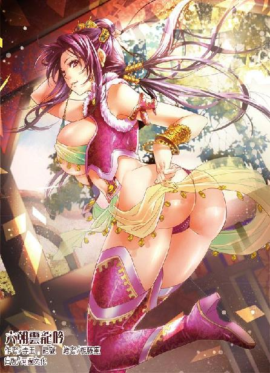

第41集·股东大会
临安篇（10/10）
出版日期：2013-01-03
【本集内容简介】
鸟人回来了？程宗扬硬着头皮进入云涛观深处，却对上了个什么怪物！
黑魔海密谋布局，独门秘术却被岳鸟人轻松破解？程员外身边还潜伏着波斯商会的奸细？李师师的去向又在何处？
盘江程氏的框架独具匠心，博得众人暗赞，股东大会也顺利进行。风光之余，程宗扬却是满怀心事有苦难言……
终于要出发前往太泉，等等，漏了什么？“太泉熊谷，一四七五”？这是什么意思？
※ ※ ※ ※ ※

封面人物：小紫
暮色中的云涛观肃穆而寂静，观内纤尘不染，显然常有人打扫，但路上没有看到一个人影，也听不到诵经声，安静得仿佛空无一人。
程宗扬随着陈琳穿过重重庭院，来到观后一座小殿。陈琳走到殿内供奉着的火德真君像后一扳，墙上滑开一道不起眼的小门，躬身道：“公子请。”
程宗扬笑道：“这后面不会埋伏着五百刀斧手吧？”
陈琳对他的玩笑恍若未闻，只当先穿过小门，神态恭敬地立在门侧。
程宗扬硬着头皮踏进门内，陈琳在门侧一按，小门合闭如初。
门缝合紧的刹那，夕阳下的轻风和归鸟的鸣叫都被隔绝在身后，周围传来一股无形的压力，自己仿佛置身于一个透明的玻璃瓶中，连空气都变得凝固。
程宗扬抬起眼，面前是一条夹在两堵高墙之间的甬道，宽不及五尺，只能容两人并行，墙高却超过两丈，抬头只能看到两墙间的一线天空。狭长的甬道曲曲折折不知伸向何方，走在甬道内，整个人都似乎变得渺小起来。
陈琳弯着腰，不言声地在前引路。从外面看来，这里已经是云涛观的尽头，如果不是置身其中，程宗扬怎么也想不到观后还另有蹊径。
一盏茶工夫后，已经临近南屏山屏风般的山体。甬道尽头出现一道台阶，利剑般笔直伸入岩壁。峭壁上爬满盘根错节的油麻藤，从山石间生出的大树犹如虬龙，将崖壁遮蔽得严严实实。但以程宗扬的目力，透过枝叶，仍能看到发白的岩石——台阶尽头分明没有路。
陈琳立在岩壁前，躬身说道：“公子请进。”然后举步迈入。
程宗扬睁大眼睛，只见他的身影毫无阻碍地穿过岩石，然后就像浸在水波中一样，渐渐变得模糊。
程宗扬盯着眼前的岩壁足有一分钟，然后一步踏出。
坚硬的石壁如同幻影般消失，接着眼前突然一空，视线一下变得开阔。程宗扬抬起头，惊奇地望着面前巨大的空间。外面看来浑然一体的山体内，竟然有一个直通山顶的瓮状洞穴。
整个洞穴呈宝瓶形，仿佛是从山中垂直挖出来一般，外壁只有一道细窄的开口。洞窟内两座三层的楼阁前后相连，楼体直接建在陡直的岩壁上，飞檐斗角，回廊拱桥，极尽华丽之能事。
即使程宗扬对法术是门外汉，这会儿也明白整座楼阁连同这处洞穴都被用法术隐藏了起来。从踏入甬道时的感觉推断，不仅光线，连声音也被完全隔绝。
把居所搞这么隐秘，怎么看都不像帝王家的作派，联系到陈琳方才说的话，程宗扬百分百敢肯定这是岳鸟人的手笔。
没想到这鸟人竟然就躲在临安，宋主的眼皮底下，真够有胆量的。不过话说回来，以岳鸟人的霸道蛮横，竟然用上诈死的拙劣手段藏头露尾，真不知道他惹上了什么仇家。
如果真是岳鸟人，那个表贩子为何会在这时出现？事前刘娥又为什么没有透露出半点口风？
程宗扬越想越是纳闷，按道理说，岳鸟人作为自己的便宜岳父，此时现身不会有什么恶意，可从岳鸟人以往干的事情分析，这家伙似乎不大讲什么道理。如果他慈父人格突然觉醒，非要替月霜讨回公道，“咯嚓”一刀把自己留在宫里打工，自己去哪儿说理呢？
四扇精雕细刻的殿门大开着，陈琳卷起遮挡蚊虫的纱帘，一手用拂尘扫了扫门槛。程宗扬暗暗吸了口气，然后挺胸入内。
两人沿着楼梯，不多时便来到前面楼阁的顶部。夕阳的余辉从洞口的枝叶间映入，将楼宇镀上一层金黄的光芒。远处的西湖波光荡漾，湖中碧绿的荷叶在风中起伏，虽然置身山腹，却令人心胸开阔，景色比翠微园更胜一筹，即使程宗扬心下忐忑，也不禁一阵心醉。
前楼的顶楼装着朱红的栏杆，做成观景台的样式，台后有一道廊桥与后楼的大门相连，形如飞虹。
陈琳在廊外停住脚步，用尖细的声音道：“奴才在外面伺候，公子自行入内便是。”
程宗扬捏着一把汗，硬起头皮走入廊桥。
跨进大门，眼前的光线微微暗了下去，空气中飘荡着淡淡的脂粉香气。楼梯旁站着一个长身玉立的女子。她穿着一袭黑色的皮衣，裙底只到大腿根部，光亮的皮革又短又紧，紧紧包裹着浑圆的臀部，腿上是一双过膝的高跟长筒靴，露出雪白的双臂和大腿。她长发束成简单的马尾，肩后背着一柄长剑，只不过她脸上戴着一只白色的面具，只露出两只乌黑的眼睛，无法看到她的真实容貌。
那女子目光犹如刀锋般盯了程宗扬一眼，然后一声不响地移开。
程宗扬纳闷地看了她几眼，不知道岳鸟人身边为何会钻出一个女侍卫。
忽然阁内传来一声尖叫，接着一个妇人跌跌撞撞地出来，她钗溜发乱，神情惊惶，一张媚艳的粉脸像被什么恐怖之极的事物吓到般变得煞白。
那妇人桃脸杏腮，体态妖娆，惶急间见到程宗扬，就像抓到救命稻草一样露出惊喜的眼神，却是梁夫人黄氏。
程宗扬一脸错愕，她怎么会出现在这里？李师师、卓云君、阮香凝，现在又出来个梁夫人——岳鸟人这是唱得哪一出？难道是这当爹的良心发现，要替月霜出头，把她们都收拾了？
看着梁夫人跌跌撞撞地出来，戴着面具的女子两只乌黑的眼眸微微一转，冷冷瞥了她一眼，身体却没有任何动作。
紧接着阁内发出一阵刺耳的怪响，一团黑乎乎的物体“咔咔”乱响地蹿了出来。那是一个三尺多高的铁制怪物，长方形的脑袋画着两只怪模怪样的眼睛，躯干就是一个横置的铸铁圆筒，腿脚是几根简陋的折叠式铁架，行动时像青蛙一样一蹦一跳，两根枝状的手臂却畸形得细长，手掌像螃蟹一样是个能活动的夹子。
这是什么鬼东西？程宗扬脑子里先蹦出这个念头。
这东西明显是手工做成的机械，可这手工实在太次了点儿。把这么垃圾的东西说成机器人，简直是对机器人的污辱——如果非要比拟的话，这玩意儿有点像狗头、猪身、青蛙腿、螳螂臂加上螃蟹钳的混合体。
那东西蹦起来浑身乱响，就像一个随时都会坏掉的发条玩具，行动却十分迅速，两个跳跃，便追上逃奔的梁夫人。接着分节的手臂往上一甩，勒住梁夫人的脖颈，另一只蟹钳般的手器往下一划，“嗤喇”一声，将梁夫人的衣裙从领后到臀下齐齐划开，露出里面一具白生生的肉体。
梁夫人惊恐地张大眼睛，双手抓住怪物坚硬的前肢，徒劳地挣扎着。她脖颈被那个怪物勒住，身体后仰，不仅无法出声，连呼吸都为之断绝，根本顾不得破裂的衣裙从身上滑下，露出赤裸的胴体。
那个铁怪物攀住梁夫人的脖颈，身体直立起来，折叠的双腿一蹦一跳，似乎想攀到她身上。程宗扬这会儿才看到它筒状的躯干下端装着一根黑乎乎的棍子，正对着梁夫人的臀缝儿一耸一耸。只不过它的设计实在不合理，梁夫人身材并不算高，可它直立起来也只到梁夫人臀部，怎么跳都差着一大截。
眼看梁夫人被勒得脸色发青，程宗扬顾不得多想，一把拧住那怪物的前肢，用力一折。
一股古怪的力道从怪物的前肢传来，纯粹的机械力量和硬度之外，还有一种奇特的弹性。以程宗扬此时的力道，全力施为下，连铁钩也能拉直，那怪物的前肢却旋转了一下，在被拉开的同时，也避免了机械的物理损坏。
铁怪物的双目闪过一抹红光，似乎在识别眼前的生物，接着它张开铁钳，气势汹汹地朝程宗扬夹来。程宗扬当然不会拿自己的血肉与金属硬撼，抬手一挥，那怪物一条前肢凭空断裂，断肢“呯”地掉在地毯上，翻滚了几下。
程宗扬抬了抬珊瑚匕首，“来啊！”一边说，一边却把七成的精力都放在身后的女侍卫身上。
梁夫人颈中留下一道青紫的印痕，她跪在破裂的衣服间，双手攥着程宗扬的衣角瑟瑟发抖。
那只铁怪物少了一条前肢，本来就像要散架的结构更加脆弱。它歪歪扭扭转了两圈，然后扑倒在地，接着充作躯干的圆筒内发出怪异的声音——
“警报！警报！”
阁内蓦然传来一声狂吼，犹如咆哮的雄狮，将整座楼阁都震得隐隐发颤。
程宗扬握住匕首，紧盯着阁门。咆哮声中，一只只有兔子大小的小白狗蹿了出来，尾巴竖得像旗杆一样，朝入侵者疯狂地大叫。但只叫了两声，那只小白狗认出面前的男人，咆哮声立刻变成呜咽，它色厉内荏地瞪着程宗扬，尾巴却灰溜溜地垂下来，一边叫一边后退，接着一头扎进阁内。片刻后那小白狗又蹿出来，咬住怪物的后腿，用尽吃奶的力气把那个铁家伙拖回阁中。
程宗扬嘴巴张得足足能塞下一个拳头，半晌才狂叫一声：“死丫头！你搞的什么鬼东西！”
※ ※ ※ ※ ※
“这种垃圾才不是人家做的呢。”
小紫一手抱着雪雪，蜷着腿坐在锦榻上，不满地嘟起小嘴。
程宗扬近乎贪婪地望着小紫。数月不见，小紫不仅恢复了以往的气色，而且更胜一筹，整个人就像一颗完美的水晶，散发着晶莹剔透的光泽，那双娇俏的美目灵动无比，顾盼间光彩夺目。
不过很快程宗扬就黑了脸，“这是怎么回事？”
小紫挑起唇角，“你问她好了。”
小紫跷了跷玉趾，伏在榻边给她舔舐脚趾的贵妇满头珠翠一阵轻颤，唇角溢出一丝唾液，她伸出香舌，仔细吮净小紫白嫩的脚趾，然后扬起脸，露出一张风韵犹存的面庞。
宋国的太皇太后此时就像一个奴婢般，驯服地伏在小紫脚边，目光中充满了崇慕和期盼。
“十余年来，奴婢日思夜想，只盼能重遇主人，”这位尊贵的妇人几乎喜极而泣，“如今终于盼来了……”
程宗扬半是尴尬半是纳闷地自嘲道：“难道不是我吗？”
“公子是守礼的君子，”她略带幽怨地说道：“奴婢的主子却从来都不是知礼守法的老实人。”
刘娥猫咪般偎依在小紫脚边，媚眼如丝地说道：“奴婢见到紫妈妈，便知道妈妈才是真主子。”
程宗扬感觉自己仿佛一头撞进灰窝，碰了一鼻子的灰，情不自禁地摸了摸鼻子。
小紫妙目水灵灵在他身上打了个转，从舌尖轻轻吐出三个字：“大笨瓜。”
“喂，给我让点儿位子！”
程宗扬挨着小紫坐下，一手毫不客气地揽住她的腰肢。小紫没有推开他，而是舒服地靠在他怀中，一边翘起鼻尖，嗅着他身上的味道。她臂间的雪雪却瞪圆眼睛怒视着程宗扬，喉咙里发出狺狺的威胁声。
程宗扬检查了一下小紫的经脉，终于放下心来，一直吞噬她精血的焚血诀果然已经痊愈了，自己一直担心她收了那么多阴魂，会不会伤及身体，现在看来还好。
程宗扬勾起手指在雪雪脑门上敲了一记，“叫什么叫！再叫就拿你煲汤！”
雪雪呜咽一声，委屈地钻到女主人怀中。
摆平了这条小烂狗，程宗扬回过头，顿时噎了口气。刘太后仍伏在榻前，旁边不知何时又多了一个黑皮衣白面具的女侍卫，正一件一件剥去她的衣物。
那女侍卫的动作简单得有些粗鲁，刘娥却没有半点不悦，她双颊潮红，双眼波光流转，说不尽的柔艳妩媚。
不多时，刚才还锦衣华服的太皇太后便被剥光衣裙，连里面的亵衣也被扯去。她满头珠翠，髻上的凤钗珠光宝气，华贵无比，身上却是一丝不挂，裸着白花花的肉体伏在榻前，犹如一只白羊。
小紫伸出玉足，用足尖挑起美妇的下巴。刘太后抬起螓首，身体因为裸露而微微发颤。她目光下垂，有着鱼尾纹的眼角流露出一丝羞态。
看着刘太后双颊羞窘的红晕，程宗扬不禁生出一丝尴尬，再怎么说，她也是宋国最尊贵的妇人，又曾经是自己便宜岳父的女人，论年纪也足够当自己姨娘，此时在两个小辈面前裸露身体，这种羞辱未免过分了些。至于姓岳的鸟人……无论他的灵魂是在地狱煎熬还是在下水道飘泊，恐怕都会深感不安。
他咳了一声，低声道：“别胡闹。”
小紫白了他一眼，然后翘了翘手指。
旁边的黑衣女卫扯住刘娥的发髻，将她拽得挺起身来。眼前一阵白光跳动，露出刘太后赤裸的双乳，她乳房略微有些下垂，乳肉有着柔软的质感，但丰满的形状仍能看出往日诱人的风情。
小紫一边逗着雪雪，一边笑吟吟对程宗扬道：“我原以为她都老得不成样子了，原来身子还很白呢。”
刘娥虽然已过盛年，但保养极好，白皙的肌肤上几许皱纹，反而让她多了几分少女所没有的成熟韵致。只不过一想到她是自家便宜岳父的女人，程宗扬多少还有点心结。
程宗扬岔开话题，“好啦，我们这么久没见，该说点正事了吧？”
小紫道：“她可是宋国的太皇太后呢，这会儿脱光光了你都不理睬，好没面子呢。程头儿，给点评价哦。”
程宗扬敷衍道：“还好吧。”
小紫眨了眨眼睛，“哪点儿好呢？”
“皮肤很好。”
小紫撇了撇小嘴，抱起雪雪道：“大笨瓜不看，就让你看好了。”
黑衣女卫拽住刘娥的发髻，一手抓住她白花花的双乳用力揉弄，不时还揪住她的乳尖揉捏着向上拉扯。刘太后颦起蛾眉，吃痛地发出几声低叫，两团柔软的乳肉晃动着不住变形，乳头以肉眼可见的速度膨胀起来，硬硬翘在胸前，不多时就像熟透的葡萄一样又紫又胀。
“啪！啪！”
空气振动着传来清脆的肉响声，黑衣女卫张开手掌，将刘太后两只乳房打得发红，略微松弛的皮肤也为之紧绷，然后把她往地上一推，一手压住她的腰背，另一手分开她并拢的双膝，将她摆成伏地挺臀的姿势。整个过程干净利落，没有一丝多余动作，几乎一转眼间，刘太后就被按住，她上身贴在地毯上，白光光的屁股高翘着，像展览一样暴露在两人面前。
刘太后喘息着伏在地上，她双膝分开，腰部又压得极低，那只肥白的屁股高高举起，臀沟分开，从后望去，雪臀玉户一览无余。刘太后白花花的臀肉并没有因为岁月而丧失光泽，而是变得柔软无比。她下体微微有些松弛，这会儿摆成分腿举臀的姿势，性器随之绽开，成熟的阴户宛如一片莲瓣嵌在股间，阴唇边缘色泽极深，内里却是红鲜鲜的。
小紫像教婴儿牙牙学语一样，对雪雪道：“牡——丹——”
小死狗煞有介事地点点头，又轻蔑地瞥了程宗扬一眼，那贱贱的模样看得程宗扬直想抽它。
小紫又教道：“牡丹滴水——”
雪雪伸长脖颈，只见女侍卫戴着黑色皮革手套的双手扒住刘太后的粉臀，食指和中指扣住阴唇边缘，往两边一分，将她秘处完全翻开，露出阴户内一只指尖大小的穴口。然后并起双指，插进刘娥体内，在这位尊贵的太皇太后性器内掏弄起来。
刘娥阴门敞露，红艳的蜜肉微微震颤着，软腻的穴口在黑色皮革的摩擦下，时翻时收。从后面看不到她的表情，只能看到那只白花花的大屁股哆嗦着，充满了屈辱感。
太皇太后窘迫的样子，让程宗扬都有些脸上发热。以刘娥的身份，怎么受得了这样一个小丫头的羞辱？他贴在小紫耳边道：“好了，别玩了。”
小紫翘起唇角，露出一个娇俏的笑容，“这样玩，她才开心啊。”
话音刚落，便看到黑衣女卫扬起手掌，在刘太后臀上重重打了一记。刘娥惊叫声中，穴口一阵哆嗦，一股湿滑的液体猛然涌出，打滑了黑色的皮革，接着她整个屁股都颤巍巍地抖动起来。
黑衣女卫用力抽打着刘娥的屁股，将那只白花花的肉臀打得啪啪作响，一边喝道：“贱婢！让主子看你的花儿！”
“啊呀……奴婢知道了……”刘娥一边应着，一边两手绕到臀后，扳住屁股往两边掰开，露出淌水的蜜穴。
程宗扬只觉一股邪火从腹下升起，不由干咳一声，“行了。”
戴着面具的黑衣女卫道：“回主子，这贱婢的癖好是暴露羞处，让人观瞧，越是被人看到，越是开心。”
说着她伸出手指，按在贵妇臀沟间那只深褐色的肉孔，“贱婢，这是哪处贱洞？”
刘太后带着一丝柔媚的颤音道：“这是贱奴下贱的屁眼儿……”
“好松的贱洞！”黑衣女卫呵斥道：“夹紧些！”说着，手指粗鲁地捅进她屁眼儿里。
看着刘太后一边浪叫，一边主动扭腰耸臀，用前后两只肉穴套弄黑衣女卫的手指，程宗扬终于明白过来，这贵妇刚才的战栗并不是因为羞窘或者紧张，而是因为兴奋。
程宗扬把目光从刘娥身上移向旁边的黑衣女卫。那女侍卫戴着面具，声音听着却有些耳熟。程宗扬一边打量着她的身材，一边回想着，心里渐渐想起一个人来，叫道：“惊理？”
当日潜入江州的龙宸杀手被剿杀殆尽，其中一名女杀手落到小紫手里，没想到现在成了死丫头的护卫。
那女侍卫拔出手指，指下的肉穴“啵”的一声淌出一股淫液。她屈膝施了一礼，然后道：“婢子见过主人。”
“外面那个是罂粟女？”程宗扬笑道：“你怎么收服她们的？”
“很简单啊。”小紫若无其事地说道：“她们不肯留在水香楼，就自愿献了魂魄给人家，给人家当了侍奴。”
摄魂夺魄的巫术最伤阴德，一向被各大宗门所敌视。幽冥宗与黑魔海巫宗都是此道翘楚，只是朱老头身为毒宗传人，虽然对巫宗所学情有独钟，但他那点把式究竟有多少份量，实在很可疑。
不过这一切都随着玄武湖之战成为往事，死丫头从古冥隐身上尽得幽冥宗之秘，炮制几个“自愿”献来的魂魄，自然轻而易举。程宗扬不无恶意地想道：惊理和罂粟女投到死丫头手下，说不定还是她们的运气。
忽然耳边一阵“沙沙”声响起，程宗扬低下头，只见脚边不知何时爬出一个古怪的物体。它大小有一尺多长，通体洁白，环状的身体是用象牙一节一节雕成，外形前粗后细，尾部向上挑起。模样有些像大号的蝎子，但身下没有肢足，只靠身体一弓一弓地向前蠕动，速度竟然还不慢。
那象牙蝎子弯弯曲曲地爬到刘娥臀下，昂起头转了一周，然后尾尖抵住地面，“咔”的一声向上弹起，落在她臀上。光滑的象牙蝎身没有任何触肢，程宗扬原以为它在刘娥臀上一碰就会落地，谁知蝎身一紧，竟然附在上面，仔细看时才发现蝎身接缝处有着一排类似吸盘的细小结构，紧紧吸住刘娥的臀肉。
刘娥柔软的阴唇像被水柱冲刷般传来一阵波动，象牙的蝎身蠕动着，钻入她阴户内。接着粗圆的头部顶住穴口，一节一节挤了进去，穴口的红肉被白色的蝎身撑得鼓起，淫水一滴滴淌落下来。
忽然刘娥发出一声尖叫，却是蝎身在她体内猛地转了一周。刘娥双颊升起一片红晕，分节的蝎身在她体内不住屈伸转动，带出一波又一波淫液。接着蝎尾弯曲下来，准确地挤入她柔软的屁眼儿中。
程宗扬看得目瞪口呆，半晌才抓住小紫的手臂，“你搞的什么东西？怪物？妖术？”
这次是雪雪翻了他一个白眼，一副看不起他这个土包子的表情。
小紫没有开口，眸子只微微一亮。
惊理立刻道：“贱婢！主子已经瞧腻了，让你到外面露着！”
刘娥发乱钗斜，浑身发软，被惊理扯住头发，跌跌撞撞地爬到殿外。
等两人离开，小紫才嗔道：“大笨瓜！没看到我有什么不一样吗？”
“有吗？”程宗扬愕然打量着她。
“这里啦！”
小紫指了指手臂，程宗扬才注意到她的珊瑚钏子被改造成一条紫色的小蛇，盘在她雪白的手臂上。
小紫手臂一晃，那条紫蛇掉在榻上，“哗啦”一声，蛇体分解成一堆细小的零件。外表看似完整，里面却是无数各式各样的齿轮、簧片、机括……小的比绿豆还小，大的也只有指尖大小，每一件都精巧无比。
程宗扬拿起一件，对着光线道：“这是你从闹钟上学的？根本就完全不一样嘛！而且它没有人工智能，怎么可能操纵？”
“大笨瓜，你知道附体吗？”
“再叫就真被你叫笨了！”程宗扬道：“附体我当然知道，都卢难旦妖铃不就是干这个的吗？”
“阴魂和妖气要附在活物上才能行动，而且附体的条件很苛刻，时间也很短暂，时间一长，被活物的阳气反噬，就会消散。闹钟上足发条，就能自己运转，但没有意识。如果做一件可以自行运转的器具，用阴魂来操控呢？”
“不可能！”程宗扬道：“闹钟再精巧也是死物，你把阴魂放在哪里？而且这里面根本就没有发条嘛！”
“程头儿，你好聪明呢。”小紫笑吟吟用指尖挑出一颗碧绿的翠玉，“有龙睛玉哦。”
※ ※ ※ ※ ※
程宗扬仔细打量着散乱的珊瑚紫蛇，这件东西虽然比闹钟复杂得多，原理却是一样，只要有足够的动力和操纵的智能体，就能运转。在小紫的改造下，用龙睛玉代替了动力，同时在其中纳入妖魂。妖魂虽然无法直接驱动珊瑚紫蛇，但可以通过控制龙睛玉这个动力源，间接进行操控。
这种做法并不鲜见，程宗扬与匡仲玉等人聊天时，听说六朝颇有些术者擅长制造魂器，但那些魂器大都是在刀剑上蓄养魂魄，使器具产生附加的法术效果。小紫却从器具本身入手，把它做得足够复杂。一般的魂器需要常年累月的滋养，少则十余年，多则数十年上百年，才能发挥效果。小紫的做法则是器具本身可以运转，只需置入阴魂进行操控。
这中间的道理并不难猜，但要做得比闹钟更精巧十倍，程宗扬不知道这世间除了死丫头还有没有第二个人具有这种能力——自己恐怕是六朝见过自动设备最多的，可连个会转的闹钟都做不出来，更别提那些根本就没见过自动设备的术者了。
眼前那条珊瑚紫蛇只有半尺长，拇指粗细，里面的零件却足有好几百个。真不知道死丫头是怎么做出来的。
程宗扬拿起一只黄豆大的齿轮，“这个齿轮你做了多久？”
“差不多有一天。”
“别告诉我这些零件都是你自己做的！这么多零件，你一辈子都做不完。”
“大笨瓜。”小紫道：“人家做了几个用齿轮牵引的锉刀，置入阴魂，然后放上毛坯，让它自己去磨就好了。”
程宗扬一头碰在扶手上，连自动化生产线都被死丫头做出来了，难怪她要去宋军的伤兵营采集魂魄，以她的消耗量，百八十个真不够用的。
“这得杀多少人啊……”
小紫不以为意地说道：“反正他们都是要死的。魂魄不取也会消散，还不如我拿来废物利用。”
死丫头的歪理自己永远都说不过。程宗扬心里盘算着，既然能做出自动磨齿轮的锉刀，那么做个磨水泥的自动研磨器呢？一旦能够代替人工，江州水泥的产量绝对会暴涨。不过程宗扬随即又放弃了这个念头。问题在于动力，自己连电都不知道怎么搞，唯一能指望的能源就是注入法力的龙睛玉，即使自己舍得用龙睛玉磨水泥，也得能雇得起肯用法力磨水泥的法师。
不过换个角度来想，大江的水力资源倒是个主意，虽然效率低了些，好在都是免费的。看来有必要在水泥窑旁建几个水车磨坊了。
程宗扬放下齿轮，那堆分散的零件“哗啦”一声收拢，合并成一条紫色的珊瑚小蛇，蜿蜒游回小紫臂上。
小紫年纪尚幼，纯以修为而论，升到五级都不知道要哪一年。而自己的对手越来越强大，一旦遇到强敌，小紫的安全就成了一个大问题。现在她另辟蹊径，把机械和法术结合起来，等于平添了一个有着无数法宝的仙囊。
望着小紫娇俏的笑脸，程宗扬叹道：“以前说用魂魄法术代替人工智能，我还以为你开玩笑，没想到还真让你做出来了。”接着他猛地欢呼一声，“来亲一个！”
雪雪愤懑地挥舞着小爪子扑了过来，被程宗扬揪住耳朵扔到一边。
吻着小紫的唇瓣，程宗扬心神仿佛沉浸在美妙的触感中。这几个月自己倒也不是过的和尚日子，有橡树瓦的娇儿、桂儿，梁夫人，更不用说阮香琳和凝玉姬。可即使温香软玉在抱的良宵，自己感觉最多的，仍然是寂寞。没有小紫的日子，连时间都似乎变得不完整。无论自己的喜怒哀乐，都没有人分享，连空虚都是孤单的。
良久，程宗扬松开嘴，在小紫耳边叹息道：“我们连在一起多好，走到哪儿都不用分开。”
“好啊。”小紫轻笑道：“你如果哪天敢背叛我，小紫就把你的魂魄收来，放在这里面。”
“喂，太过分了吧！”
“安啦。”小紫道：“人家还没用过呢，怎么舍得收你的魂魄？”
程宗扬坏笑道：“你想用还不简单？我这会儿正好有时间。”
小紫侧身依在坐榻上，一手托着香腮，美目轻轻一眨，抛了个媚眼，一边柔媚地勾了勾手指，“程头儿，来啊……”
程宗扬警告道：“你这样乱擦枪，小心走火——”话音未落便猛扑过去。
小紫游鱼般从榻上滑开，就在这时，耳边突然传来几声低低的咳嗽。那咳声仿佛是从生锈的铁棺材中传出，带着空空的回声。仔细听时，却近在咫尺，如同一个幽灵在身边艰难地低咳。
程宗扬身上的汗毛都竖了起来，他闪身把小紫挡在背后，然后手掌一翻，珊瑚匕首闪电般挥出，将墙角一扇屏风斩开。
木制的屏风悄然断裂，露出后面一间丈许深的暗室。室内空无一人，只是墙壁上嵌着十余朵铜制的石榴花，声音便是从其中一朵中传来。
程宗扬怔了一下才反应过来，那些铜制的石榴花其实是设在墙内的喇叭。他好奇地走过去，只见墙上绘着两座楼阁的平面图，显示出喇叭所在的位置。这会儿正在发声的那只，位于前楼一个僻静的小阁中。
“死丫头，这不会是你干的吧？”
程宗扬明知道这些喇叭是楼阁初建时就装在里面的，但出于安全，他还是先问一下小紫——天知道死丫头还能搞出什么奇迹来。
小紫白了他一眼，推开喇叭旁边一只铜片。铜片后是一个圆形的孔洞，里面发出淡淡的微光。程宗扬凑过去看了一眼，只见里面嵌着一面小镜子，镜中微微发亮，映出一间斗室和两个人影。
郭槐佝偻的身体像一截枯朽的树枝，躺在地上，他右肩衣物被撕开，肩头已经萎缩的皮肉上，露出一个发黑的伤口。旁边一人峨冠博带，威严的神态不怒自威，却是殇侯。
当日在小瀛洲，郭槐被剑玉姬一剑从肩头刺入，程宗扬虽然尽力救治，但这样重的伤势，郭槐能勉强保住性命已经是奇迹了，最多伤愈后能自行走动，不须人照料，至于痊愈，自己连想都不敢想。
殇侯提起长袍，盘膝坐下，双手浸入身前一只铜盆中，细致地抹净每一根手指。片刻后他提起双手，轻轻甩了甩，然后用一团丝棉浸过药液，将郭槐伤口周围的伤药尽数抹去。
郭槐浑浊的目光看了殇侯一眼，然后叹了口气，闭上眼睛。他肩头伤口裸露出来，里面是收缩而变形的筋肉。殇侯仔细看了片刻，接着手指探入伤口内。郭槐的咳嗽声猛然一紧，仿佛要将破碎的肺叶都咳出来。
殇侯面无表情地检查着郭槐的伤处。从伤口的角度、尺寸，到肌肉受创的痕迹，巨细无遗。郭槐双目紧闭，咳嗽声时紧时慢。殇侯的动作却半点不急，单是创口就检查了一刻钟，看样子全部检查下来，起码要半个时辰。
程宗扬离开窥视孔，他已经看出来，这个窥视孔其实就是潜望镜的变形，通过一系列镜子的折射，对室内的情形进行观察。
谢艺说过，岳鸟人曾经派人往大秦寻找制造玻璃镜的工艺——看来制镜工艺没找到，弄来的这些小镜子，都被岳鸟人用在这里了。
“死老头不在江州发财，跑这儿干嘛来了？”
“来开股东大会啊。”
“这像是来开会的吗？”
耳边忽然传来一声闷哼，程宗扬扭头看去，却是殇侯将郭槐已经长住的伤口重新撕开，创口鲜血迸涌。程宗扬倒抽一口凉气，“老东西下手也太狠点儿了吧？郭公公的伤口好不容易才长住。”
小紫道：“不撕开伤口，怎么知道他是被谁刺伤的呢？”
程宗扬扭头看着小紫，“什么意思？”
小紫为他的智商叹了口气，“再过几个月就是黑魔海的廿年大祭，毒宗只剩下殇老头撑门面，巫宗也好不了多少，如今能拿出手的，只有一个剑玉姬。难得能遇见她出手，这样好的机会能近距离观摩她的招术、剑法，怎么能错过呢？”
程宗扬这才明白为何郭槐也会被带来，原来殇侯是想从他身上得到剑玉姬的信息。对于殇老头这种眼力高明，又戒心十足的老东西来说，听郭槐口述，远不如直接检查伤口得到的信息更真实，也更丰富。
“卢五哥呢？”
“去找人了。”
程宗扬心头一动，卢景跑来临安找人，只有一个可能：岳鸟人那个失踪的女儿。
“有消息吗？”
“谁知道呢。”说着小紫忽然递来一只荷包，“呶。”
程宗扬接过荷包，“哪儿来的钱？”
“小紫赚的钱啊。”
“赚钱？”程宗扬怀疑地说：“我听说你在江州花钱如流水，死老头都被你敲得精穷。居然还能赚钱？”他掂了掂钱袋，“银铢？好像有四五十个呢。”
“一共五十枚银铢。”小紫拍了拍小手，夸张地叹了口气，“人家刚赚的零花钱都给你了。”
程宗扬转了几个念头也没弄明白死丫头搞的什么鬼。他这会儿最担心的就是李师师，那丫头的性子外柔内刚，和卓婊子她们不一样，撞到小紫手里，一个不好，就是鸡蛋碰石头的下场。不过在小紫面前表现出对李师师的关切，显然不是个好主意。
程宗扬若无其事地一个一个看着窥视孔，始终没看到李师师，最后他打开左边第三个窥视孔，第一眼先确定李师师不在房内，才略微放了心。看来李师师真的不在这里。
窥视孔中映出一间宽敞的卧室。房内立着几个女子，分别是凝玉姬阮香凝、卓云君，还有一个纤腰长腿、丰乳肥臀的黑衣侍奴。
程宗扬讶道：“你又招了个护卫？”
镜中虽然能看到卧室，却听不到声音。程宗扬看了看喇叭，取出里面的阻音塞，立刻传来“啪”的一声脆响。
那名侍奴挽着一根长鞭，在空中虚抽一记，带着一丝残忍的意味道：“我叫蛇夫人，贱婢！听说过吗？”
阮香凝颤声道：“奴家不是江湖中人……”
“那我告诉你。”蛇夫人道：“本夫人原本姓佘，因为对仇家心狠心辣，江湖中叫我蛇夫人。如今虽然是妈妈的奴婢，但折磨人的手法一点都没放下，你想不想试试？”
阮香凝满面惧色，怯生生道：“奴家不敢……”
“既然不敢，便老实说吧！”
“奴家……奴家都已经说过了……”
“你是黑魔海御姬奴的事呢？”
阮香凝几乎快哭了出来，小声道：“奴家都忘记了……”
蛇夫人扬起皮鞭，对着旁边的太师椅抽去，木屑纷飞间，留下一道寸许深的鞭痕。
“呀！”阮香凝惊叫一声，掩住嘴巴。
蛇夫人厉声道：“再不说，下一鞭便抽在你身上！”
“奴家真的不记得了——哎呀！不要！”
蛇夫人举鞭欲打，对面传来一个声音：“等等。”
蛇夫人立刻收起鞭子，顺从地退到一旁。
“也许她真是不记得了，”那少女柔声道：“万一打坏了可怎么成？”
程宗扬笑道：“雁儿也来了啊。”
但雁儿接下来一句，就让程宗扬黑了脸，“公子就喜欢这种老女人，打坏了她，公子肯定会心疼的。”
程宗扬黑着脸道：“你们没事儿就在背后败坏我的名声是吧？”
小紫扳着手指道：“程头儿来临安三个月，妓女除外，一共和五个女人有上床的机会，分别是刘娥、阮香琳、阮香凝、黄莺怜、李师师。和程头儿上过床的有三个：阮家姐妹和梁家夫人，都是已婚妇人，平均年龄三十一岁……”
程宗扬一把捂住她的小嘴，“别说了！”
小紫用力踩了他一脚，程宗扬抱着脚跳开，一边辩解道：“你不能只看表面数字！这都是有原因的！我也想找个小姑娘，可宋国的小姑娘都在家里藏得老紧了！除了秦桧那种不要脸的老男人，我想找都找不到！”
“不是还有个小丫头吗？”
程宗扬叹了口气，“我说实话吧。如果是好人家的姑娘，我肯定要负责的。你又不是不知道，一个云如瑶就让我焦头烂额，到现在都没摆平。要不是答应过小狐狸替他找赤阳圣果，我早就飞过去把云丫头接来了。不是处女就无所谓了，这些女人有家有室，自己知道怎么照顾自己，说白了，大家是纯粹的肉体交易。就为图个方便，并不是我就喜欢这种的，其实吧，我是很博爱的……”
小紫笑吟吟道：“你的意思是，这个女人你也不管吗？”
程宗扬一时语塞。阮香凝和其他人不一样，她虽然是黑魔海的御姬奴，但记忆已经被清除，如今家破人亡，被人当礼物一样送给自己，弃之不顾这种事自己真做不出来。
“你既想留下她，又想留下姓林的教头，”小紫挑起唇角，“将来他们夫妻若是见面，就好玩了。”
这又是一桩麻烦，不过程宗扬已经考虑过，满不在乎地说道：“反正林教头在江州，我把她放在临安藏起来，不让人知道就是了。”
“大笨瓜。”小紫给了他三个字的评语，然后道：“你自己看好了。”
程宗扬望向窥视孔，片刻间，卧室内已经换了一幕场景，变得香艳无比。阮香凝除去钗簪衣裙，长发挽在脑后，裸露出白滑的肉体。室内虽然有床榻，她却赤条条坐在一张圆桌上，双臂被侍奴蛇夫人拧到背后，身体后仰，双腿“Ｍ”型张开，雪团般的粉臀挨着圆桌边缘，敞露出股间光洁的玉户。
阮香凝脸上带着刻意的媚笑，紧绷的肢体却显露出她的紧张。她下体的毛发早已除净，玉户像剥壳的鸡蛋一样光滑，绽露出中间一道娇嫩的肉缝儿。
卓云君风姿绰约地解开道袍，她上身一丝不挂，股间却穿着一条窄小的皮制内裤，内裤中间嵌着一根白色的柱子——一支象牙雕成的假阳具。那根假阳具雕得维肖维妙，鼓胀的龟头、深狭的冠沟、棒身浮现的血管，无不栩栩如生，而且非常眼熟……
雁儿和声和气地对阮香凝道：“你好生和卓奴做一次就是了，不用怕，这根棒子和公子的一模一样，插进去很舒服的。”
程宗扬情不自禁地看了看胯下，然后道：“喂，你们瞎搞什么啊？”
小紫笑盈盈道：“做成你的样子，免得你吃醋哦。”
“喂，死丫头，你不会是要把我的女人都搞一遍吧？”
小紫眨了眨眼睛，“不可以吗？”
“不是不可以啦。”程宗扬妥协道：“可是感觉怪怪的……”
小紫安慰道：“没事的，习惯了就好。”
“哦……”
喇叭里传来一声带着回音的低叫。阮香凝被蛇夫人搂住膝弯，一双赤裸的玉足被迫跷起，卓云君站在她腿间，那根假阳具直挺挺地顶在阮香凝秘处，粗圆的龟头在她肉缝儿间挑弄着，将她阴唇挤得不住变形。不过卓美人儿只用假阳具在她阴部摩擦，来回揉弄她的阴唇和花蒂，始终没有进入。
片刻后，阮香凝下体变得湿润起来，蜜穴微微泛起水光。
雁儿的声音道：“二十七秒。很好。”
卓云君腰身一挺，假阳具硬硬捣入阮香凝体内。美妇足尖猛然绷紧，脸上露出一丝痛楚。
卓云君赤身裸体的样子称得上风情万种，她娴熟地挺动腰部，那根白色的象牙在少妇穴内灵巧地进出着，从穴口带出一圈娇嫩的红肉。
大约五分钟之后，雁儿的声音道：“怎么样？”
卓云君摇了摇头。
雁儿想了一下，“用吧。”
卓云君拔出假阳具，黑衣侍奴松开阮香凝，然后拿来一只玉碗。
阮香凝微微颦起眉，喝下碗内浓稠的药汁。没等她喝完，卓云君便从后抱住她丰腴的雪臀，将假阳具挺入她湿淋淋的骚穴内，大力抽送起来。
这一次阮香凝的反应明显强烈了许多，不多时，一股淫液便从穴内涌出，顺着大腿一直淌到桌上。
阮香凝光洁的胴体在那根象牙棒下颤抖着，香艳而又柔弱。这样一个手无缚鸡之力的弱质女子，无论是卓云君还是旁边的侍奴，都能轻易拧断她的脖颈。
“死丫头，这是你搞出来的春药，拿她当试验品？”
“错啦。”小紫道：“这是宫廷配方，大内秘制。”
“大内？”程宗扬不信她的鬼话，“一群寡妇用什么春药啊！”
小紫笑吟吟看着阮香凝，“你马上就知道了。”
看得出，那副春药的药力十分强烈，用在破瓜不久的阮香凝身上，不多时就让她在迷乱中达到高潮。
但那根象牙阳具没有停止，仍然在她体内挺弄。阮香凝的淫叫声不断传来，只不过兴奋的战栗中多了一丝讨饶的意味。
当阮香凝第三次达到高潮，叫声戛然而止，程宗扬眼神一厉，看着镜中的阮香凝露出一丝惶惑的神情，她身体僵硬地颤抖片刻，然后回过头，红唇微张，似乎想说什么，紧接着亮出手中一根雪亮的簪子，快捷无伦地朝卓云君胸前刺去。
阮香凝不会武功，这是自己无数次证实过的，可她这一刺快如闪电，比起一般的高手也不逊色。如果这会儿骑在她身上的是自己，全无防备之下被她一刺，不死也得重伤。但换作早有防备的卓云君，轻轻一拧，便扭住她的手腕。
阮香凝惊恐地叫道：“不要！”身体却接连攻出三招，每一招都冲着卓云君的下三路，角度刁钻而又阴狠。
程宗扬惊出一身冷汗，阮香凝不谙武功，又被抹去记忆，自己下意识里把她当成全无威胁的存在。如果不是这会儿亲眼见到，他怎么也不相信自己身边睡的会是条随时可能噬人的毒蛇。
三招转眼即过，阮香凝身体一颤，瘫软下来，生命仿佛被燃烧殆尽般昏迷过去。
雁儿道：“叫醒她。”
卓云君一手贴在阮香凝脑后，掌力微吐，将她从昏迷中唤醒。
雁儿的声音道：“告诉我你的身份。”
阮香凝变得虚弱无比，低声道：“黑魔海御姬奴，阮香凝……”
楼上的精阁内，程宗扬脸色难看地说道：“这是怎么回事？”
“大笨瓜，”小紫道：“记忆是抹不去的，她想不起来，只是因为被人锁住罢了。”
“你是说她脑中被人加过禁制？”
小紫道：“剑玉姬不会白白送给你一只鼎炉，在她身上设秘法啊，埋毒啊，肯定少不了。需要的时候只用一个指令，就能控制她进行刺杀。”
“你怎么知道她的指令？”
“人家才不知道呢。”小紫笑道：“但有办法破解。”
程宗扬回想着刚才的经历，终于找到疑点，“春药？”
“猜对了！”小紫拍手笑道：“这种春药能让她整个人都陷入迷乱，只要药力足够强，各种惑心迷神的法术都能破解。”
程宗扬呼了口气，“你怎么会知道这些？”
小紫笑容中多了几分冷诮的嘲讽意味，“当然是他留下来的。”
雁儿与阮香凝的对话不断传来，被强行解除禁制，恢复记忆的凝玉姬意志降到谷底，整个人都虚弱无比，对雁儿的问话再没有半点隐瞒。
黑魔海十余年前就在临安布下阮香凝这颗棋子，并不是只为了一个林冲，最主要的目的还是往宫中渗透。可令剑玉姬意外的是，无论黑魔海的布局多巧妙，每次触及宋宫的核心，线索都会立刻断掉，甚至反过来遭到大内的追杀。
屡次失败之后，剑玉姬猜测大内隐藏着至少一名精通法术的大行家，为了避免暴露阮香凝的身份，她放弃了向大内的渗透，因此才有西门庆色诱宫人，劫持媛公主的举动。
但这会儿谜底揭开，宋宫大内根本没有法系行家，有的只是岳鸟人留下的一副春药配方。通过高潮时的迷乱，破解可能存在的惑心类法术。这种处理方法的好处显而易见，对使用者的能力没有要求，即使刘娥也可以运用自如，很容易就能分辨出是不是有人中了瞑寂术。怪不得以剑玉姬的手段，也对大内束手无策，最后做出半路截人的下策。
问题是针对神智的瞑寂、惑心之类的法术竟然能被一副春药破掉，听起来实在太扯了。
小紫在他肚脐上方轻轻一点，“因为这里还有个更本能的脑子呢。”
“你就扯吧。”
“不信就算了。”
程宗扬琢磨了一下，忽然叫道：“是梦娘！梦娘告诉你的！你已经帮她恢复记忆了，对不对？”
“只恢复了一点。锁住她记忆的人修为很高，”小紫一脸遗憾地摊开双手，“而且她身上还有禁制，不能用这种方法。”
“梦娘呢？”程宗扬左顾右盼，“你不会把她留在江州了吧？”
小紫轻轻拍了下手，隔着两层楼，远在密室之内，根本不可能听到声音的黑衣侍奴却应声而动，向雁儿施了一礼，然后起身离开密室。
程宗扬道：“你把她们的魂魄都收过来了？”
“她们的魂魄好脏，人家才不要呢。”
程宗扬讶道：“那她们怎么能听到你的吩咐呢？前面的惊理也是，你一个眼神她就知道该怎么做。”
小紫摊开一只雪白的小手，“把你的魂魄拿来，人家就告诉你。”
“作梦去吧！”程宗扬恐吓道：“死丫头，哪天我开了你的苞！收了你的一魂一魄！让你再跟我作对！”
“好啦好啦。”小紫道：“她们的魂魄都在雁儿的娃娃里面。你要是喜欢，给你也做一个好了。”
“免了！拿到那东西我会做噩梦！”停了一会儿，程宗扬道：“喂，她们的魂魄都在娃娃里面，如果娃娃被偷了呢？”
“你是怕她们被别人操控吗？放心好了，”小紫安慰道：“只要娃娃感受不到雁儿的精血，一个时辰之内她们就会死光光。”
“用不着这么狠吧？”程宗扬道：“为什么不用魂丹呢？像泉玉姬那样。”
小紫白了他一眼，“魂丹丹体的制法是巫宗秘法，人家不会做啊。”
说话间，外面传来一阵脚步声，小紫美目又是微微一亮，接着房门打开，梦娘在一名侍奴的扶侍下，摇曳生姿地进来。
程宗扬从头到脚看了梦娘一遍，最后目光停在她娇艳欲滴的红唇上。多日不见，梦娘的肌肤更加白皙柔润，姣美的容颜如花似玉，艳丽无匹。
见到程宗扬，梦娘眼中露出一丝羞涩与喜悦交织的神情，显然还记得他这位主人。
程宗扬拉起她的手，“紫丫头没有欺负你吧？”
梦娘柔声道：“紫妈妈对奴家极好的。”
程宗扬怀疑地问道：“是吗？”
梦娘展颜一笑，诚心实意地说道：“多亏了妈妈，奴家记起了许多事呢。”
程宗扬正要开口，却听小紫娇声道：“阿梦。”
“是。”梦娘应了一声，松开程宗扬的手，款款朝女主人走去。
她步履轻盈得仿佛花瓣，姿态更是优雅无比。可那么一个大美人儿，被小紫招了招手，就像猫咪一样顺从地偎依在女主人脚边，神情间充满了温柔和依恋。
程宗扬又是好气又是好笑，死丫头如果不趁着给梦娘恢复记忆的机会塞点私货进去，自己就把鞋子吃了。问题是要塞私货也应该是自己的私货，她一个丫头片子整天跟自己抢女人，还有没有天理了？
“死丫头，你叫她来，不会就是专门气我的吧？”
“程头儿，你不想知道，她记得什么吗？”
程宗扬心里一动，想起陆谦在野猪林说的——梦娘身上有一个关乎宋国存亡的大秘密。
程宗扬吸了口气，沉声道：“她记得什么？”
小紫红唇张开，却是俏生生打了个小呵欠，然后神态慵懒地说道：“不告诉你。”
※ ※ ※ ※ ※
“陆谦还没说出这个秘密，人就挂了……”
程宗扬原原本本说了自己在临安的经历，直说得口干舌燥，然后道：“陆谦如果是胡说也就算了。但假如真有这个秘密，而且又真的关系到宋国的存亡，那么黑魔海和剑玉姬肯定已经知道了。你要是知道这个秘密，赶紧告诉我，不然我在临安下了这么大的成本，说不定哪天就全打水漂了。”
小紫却道：“袈裟上写的是什么？”
程宗扬对小紫没有半点隐瞒，当即道：“十方丛林一世不拾大师的来历。”
“哦？”小紫尾音微微挑起，带着一丝询问的意味。
以两人默契的程度根本不需要过多的语言，程宗扬自然知道小紫想问的是什么，他微微点头，“和我有点像。但也有很大的区别。”
小紫双眼闪闪发亮，“原来是这样啊。真有趣。”
“喂，别故意引开话题！”程宗扬虎着脸道：“那个秘密是什么？”
梦娘有点不安地瑟缩了一下。
小紫道：“那个秘密一点都不重要，程头儿，你还是不知道的好。”
程宗扬从鼻孔里哼了一声，“那个宋主是假的吧？”
“咦？你怎么知道？”
对那个所谓的秘密，程宗扬已经考虑了许久，宋国虽然已经千创百孔，终究是个正统王朝，能够动摇宋国国本的秘密，只可能是帝王的血统。从高俅泄露的只言片语分析，再联系到传说中的狸猫换太子，程宗扬有九成把握能肯定现在的宋主是个假货。
当年刘娥母以子贵，当上太后，她的儿子虽然短命，但在帝位上也坐了近十年，而且又有好色的名声，妃嫔甚多，可唯一的子嗣竟然是从宫外抱来的——这中间的蹊跷让人不多想都难。
宋主驾崩后，如今的宋主凭借太后、岳鹏举、贾师宪等内外贵人、重臣的承认，以幼龄继承帝位。接着岳鹏举事败消失，剩下一个贾师宪，毫不意外地独揽大权。如果不是手里握着这个把柄，凭老贾的为人早该倒台七八十次了，哪里能一句话就让局面全盘翻转？
“程头儿，你好聪明哦。”小紫虽然是玩笑的口气，却少了几分嘲讽，多了几分赞许。
得到肯定的答复，程宗扬却有点不敢相信起来，半晌才道：“我这岳父大人还真敢干啊……”
小紫道：“谁让宋主生不出来，只好请他帮忙了。”
“那他干脆自己生一个得了！还从外面抱什么呢？”
小紫瞥了他一眼，程宗扬省悟过来，“我怎么忘了，他只能生女儿——现在这位小白脸宋主是谁的孩子？”
梦娘轻声道：“好像是他在路边捡来的。”
捡来的？程宗扬下巴几乎掉在地上，岳鸟人这也太凑合了吧！随便捡个娃打扮打扮就塞到宋国的龙椅上，他把宋国的帝位当什么了？
梦娘道：“他说，不管哪儿来的孩子，肯定会比宋国的宗室强。”
程宗扬顿时没了言语，两宋十八帝，能称得上英主的，一只手都数得过来，像岳鸟人这样随便拉个路人，还真说不准能比其中几位强。
确认了宋主的身份，程宗扬又想起另一件事，高俅暗示过，对梦娘的格杀令来自宋主，看来梦娘一直留在宫中，接触到的秘密绝不会比刘太后少。
“听说韦太后给岳鸟人生了个女儿？有没有下落？”
小紫笑眯眯道：“程头儿，你在想什么呢？”
程宗扬立刻道：“当我没问！跟你说吧，我对她一点兴趣都没有！”
小紫哼了一声。
程宗扬忍不住捏了捏她鼻子，“死丫头，你的醋劲儿太大了。”
“人家才不吃醋呢。阿梦，让他抱抱。”
小紫手一抬，梦娘柔软的玉体带着一股香气滑入怀中，程宗扬心头不禁一阵荡漾。说起来梦娘还是岳鸟人预订的姬妾，结果没来得及吃到口。只可惜梦娘如此佳人，却被藏诸深宫，青春虚掷。
孟老大说过，岳鸟人一共有三个女儿，一个月霜，一个小紫，另一个是韦后所生的长女，但很早就失去音讯。斯明信和卢景曾经入宫追问过，也没有得到她的下落。
王哲托自己照顾岳鸟人的子女，但这种事勉强不得，还是一切随缘吧，说不定她现在已经嫁了人，夫妻俩过着甜甜蜜蜜的小日子。如果是这样，不去打扰她也许才是最好的。
程宗扬有点尴尬地拥着梦娘，一边朝窥视孔看去。殇侯仍然在仔细检查郭槐的伤势，另一边，阮香凝身上已经换成了那名叫蛇夫人的黑衣侍奴，卓云君却不见踪影。
“你让卓美人儿来云涛观，就是为了找这个地方吧？”
“阿梦。”
梦娘道：“奴家只能想起一些零碎的事情。其中一件是云涛观这座迷楼，他把一件很重要的东西放在这里。好像是一把钥匙……”
程宗扬立刻警觉起来，“钥匙？”
阁内忽然多了一个人，却是惊理，她悄无声息地把一枚钥匙放在桌上，然后道：“姓刘的贱婢只知道这个。用处却不清楚。”
程宗扬拿起钥匙，“这是钥匙？”
梦娘怔了一会儿，有些迟疑地点了点头。
程宗扬眼角跳了跳，那枚钥匙呈银白色，硬度极高，长度更是接近尺许，如果不是事先说明是钥匙，简直就像一柄短剑。
程宗扬翻来覆去看了半晌，除了柄上一个古怪的熊头，上面没有任何标记。如果这真是钥匙，那锁不知道该有多大。
“姓岳的说没说，这枚钥匙是用在哪里的？”
“奴家不记得了……”
梦娘记忆未曾恢复，从她口中问不出更多消息，程宗扬抬头问道：“刘娘娘呢？”
刘娥颤巍巍地爬过来，那只象牙蝎子仍扣在她臀间，分节的蝎身在她白花花的臀肉间转动着，蜜汁溅得满臀都是。
这位太皇太后在自己面前一脸的慈祥，气度雍容华贵。可在小紫这个“真主子”面前，就原形毕露了，更让程宗扬无语的是她眉眼间洋溢的驯服、兴奋和满足。看来自己把她当作长辈尊敬完全是傻瓜的做法，真该把她踩在脚下，才好让大家都满意。
刘娥道：“主人只留下这枚钥匙，让奴婢保管。”
“这是哪儿的钥匙？”
“主人没有说过。但主人留下八个字，让奴婢记住。”刘娥道：“太泉熊谷一四七五。”
听到“太泉”两个字，程宗扬立刻精神一震，追问道：“什么意思？”
“主人没有解释，奴婢也不知晓。”
“好没用的东西。”小紫道：“带出去吧。”
程宗扬飞快地思索着，刘娥口中的“太泉”只有一个可能，就是远在苍澜的太泉古阵。可“熊谷”和“一四七五”又是什么意思？难道太泉古阵里还有一个熊族的山谷？“一四七五”是第一四七五块石头还是大树？
程宗扬思索半晌也没有答案，看来只有到太泉才能揭开这个谜底了。
他扯过一条薄毯，替梦娘遮住身体，手指在她颈后一点，送她进入梦乡，然后道：“我要去太泉古阵一趟。”
“好啊，我也要去。”
“我怕有危险。”程宗扬道：“师帅说，九阳神功要练到六阳的境界才能进入太泉古阵，差不多就是第五级坐照境的修为。”
他后半句没有说，自己有生死根之助，修为进境极快，小紫就没有这样的好运气，反而因为卓云君的暗算耽误了不少时日，如今只徘徊在四级的境界，短时期内根本没有可能突破。
小紫却一点都不在乎，“不去怎么知道呢？”
说实话，程宗扬也不想再和小紫分开，他拉住小紫温凉而柔软的小手，还没开口，外面忽然传来一阵脚步声，接着卓云君牵着一个瑟瑟发抖的妇人进来。
那妇人衣钗尽去，一张骚媚的玉脸时青时白，惊魂未定，却是梁师都的夫人黄莺怜。
程宗扬看到卓云君，原以为带来的是阮香凝，见到梁夫人不由皱起眉，“你把她叫来干嘛？”
“玩啊。”
“有什么好玩的？”
小紫笑靥如花望着梁夫人，悠然道：“梁师都在临安做官，娶的妻子却是胡女。程头儿，你说好玩不好玩呢？”
梁夫人脸色顿时一僵。
“她是胡人？”程宗扬叫道：“可皇城司的记录上她明明是临安人，出身商贾！”
程宗扬在临安丝毫不敢大意，凭借皇城司的资源，早把与自己打过交道的各色人等都摸了个底儿掉，没想到死丫头竟然能找到这么爆炸性的秘闻。
“只要取她一点血迹，便能知道很多事呢。”小紫笑道：“比如，人家还知道她是奚人。小奚女，你是自己说，还是让我帮你说呢？”
梁夫人脸色数变，最后颓然道：“你赢啦。”
六朝与北方牧族时战时和，太平时节，北方牧族时常有胡商南下，甚至还有在六朝定居数代的例子，黄氏就是其中一支。
正如六朝往往通过本国商人了解北方牧族的虚实，这些胡商也同样担负着替本族打探消息的责任。但黄氏来到临安不久，奚族就在北地群雄的争斗中失势，沦为真辽的附属部族。黄氏通过种种手段漂白身份，摇身一变成为祖籍临安的皮货商人。
黄氏本意并不想与本族有更多牵涉，尤其是黄莺怜嫁入梁家，成功与梁家联姻之后，更想早些摆脱本族的束缚。但随着岳鹏举的崛起，宋国这位武穆王成为真辽最大的威胁，真辽人对这支隐藏身份定居临安的奚族商人极为重视，反而加紧了控制。
直到北地联军在塞外大败，武穆王冤死风波亭，黄氏才得以解脱。但好景不长，安稳不过数年，另一方势力又找上门来。那个人程宗扬也曾见过——来自晴州波斯商会的穆格，他代表的则是奚族人所信奉的拜火教。
如果说真辽的着眼点还在于双方战争的大局，拜火教所关注的只有一个人：武穆王岳鹏举。
星月湖大营余部在江州聚集的消息传出，黄氏就受命尽力给江州制造麻烦。而程宗扬来到临安不久，拜火教又得到消息，说这个年轻商人很可能与江州有千丝万缕的联系，因此才有黄氏主动送上门来的举动。
梁夫人一口气说完，脸色雪白地低声道：“奴婢并不想……可他们握着奴婢与异族交通的证据……若是泄漏便是灭族之罪……”
程宗扬脸色难看之极，他一直以为自己是猎人，这梁夫人是被自己顺手打来的猎物，谁知自己其实才是那条上钩的蠢鱼。
程宗扬沉着脸道：“你们从哪儿得到的消息，说我和江州有关系？”
“圣教光明祭司认识的一位朋友……”梁夫人道：“叫剑玉姬。”
“干！”
剑玉姬手也太快了，双方如果结为联盟，黑魔海获得拜火教的助力，拜火教也有了一条深入六朝的渠道，对自己的威胁显而易见。
小紫笑道：“程头儿，你说怎么处置她呢？”
程宗扬沉着脸道：“你爱怎么处置就怎么处置。”
“好啊。”小紫亮出手心一粒小小的药丸。
梁夫人呼吸顿时变得急促起来，她两眼直直盯着那粒药丸，手指微微颤抖，“求你给我一颗……只要一颗……求你……”
小紫关切地说：“这东西有毒呢，要戒了才好。”
“我不要戒……”梁夫人露出痛楚的表情，哀求道：“快给我……”
小紫轻轻一弹，药丸飞入卓云君掌心，“带她下去，问清拜火教的底细。”
程宗扬懊恼地倒在榻上，“死丫头，你是不是觉得我是个十足的傻瓜？被人骗来骗去，一点用都没有？”
“怎么会呢？”小紫两手按着他的太阳穴，一边慢慢揉着，一边呵气如兰地说道：“程头儿做生意的手段，不知道多少人佩服呢。”
“又来讽刺我。”
“你好好做你想做的事情，这些事就交给我好了。”小紫狡黠地一笑，“阴谋诡计……人家最喜欢了。”
透过大开的阁门，能看到一点微光在夜色中渐行渐远。戴着面具的黑衣侍奴一手提着灯笼，一手牵着锁链，径直将那个赤条条的贵妇带到楼外。
“你准备怎么处置她们？”
“玩啊。”小紫道：“岳鹏举的女人都是我的奴婢。”
程宗扬苦笑道：“用不着这样吧？”
小紫道：“你的也是。”
“不行！”
“大家公平竞争好了，”小紫大度地说道：“只要她们能斗得过我，我就放她们一马。”
“别开玩笑了。她们凭什么能斗得过你？”
小紫摊开双手，“那就没办法啰。”
“喂，”程宗扬警告道：“不要欺负小香瓜。还有如瑶那丫头。”
小紫笑吟吟道：“还有吗？”
“有个小丫头，好像叫李师师……”程宗扬装作不经意地说道：“她没有惹你不高兴吧？”
小紫眨了眨天真无邪的大眼睛，“没有哦。”
程宗扬暗暗松了口气，“她不是也来了吗？我怎么没见她呢？”
“已经给你了啊。”
“睁着眼说瞎话啊！你什么时候给我了？”
“呶。”小紫指了指那只荷包。
程宗扬一头雾水地打开荷包，看着里面的钱铢，“什么意思？”
“人家把她卖掉了，一共五十枚银铢，你仔细数一数，一枚都不少。”
程宗扬呆了半晌，然后抓狂地叫道：“卖掉了？！”
“她说是你的奴婢，不肯让人家玩。人家只好把她卖掉，从今往后就和你没关系啦。”
“你把她卖哪儿了？”
小紫挑起唇角，笑吟吟道：“光明观堂的弟子，当然是去妓院了。”
程宗扬脸色不断变幻，“死丫头，你玩真的？”
“当然是真的了。”
程宗扬犹豫了一下，低声道：“少瞒我——她是不是光明观堂的卧底？”
“不是啊。”
“那么她和黑魔海有牵连？”
“没有啊。”
“她是胡人？”
“不是。”
程宗扬叫道：“那你为什么要把她卖掉？”
小紫若无其事地说道：“因为人家看她不顺眼嘛。”
“因为看她不顺眼，就把她卖了？死丫头，你别太过分啊！”
小紫嘟起嘴，“你要不高兴，就去找她好了。”
程宗扬瞪了她一会儿，“你不和我一起去？”
小紫懒洋洋道：“人家才不愿意看你的脸色呢。”
程宗扬放缓口气，“那丫头挺可怜的，父母把她当摇钱树，师门又对她不闻不问，走投无路才投到我这里。师师姑娘现在虽然年轻，但是连她自己都不知道她有多么出色的天份。我的盘江程氏很缺少这样的人才，其实我是按公司的高级管理人员来培养她的。喂喂喂，我说了这么多，解释清楚了吗？”
“她是光明观堂的弟子你也不担心吗？”
程宗扬毫不犹豫地摇了摇头。光明观堂对李师师的冷淡，李师师对师门的绝望自己都看在眼里，光明观堂如果真想对付自己，小香瓜或者潘姐儿才是她们最好的人选。
“大笨瓜。你根本就看错了她的天份。”小紫一针见血地说道：“她的天份根本就是当妓女。”
程宗扬虽然很佩服死丫头目光的精准和犀利，但为了培养一个绝代名妓，放任一群猪把李师师这棵小白菜给拱了，自己铁定要被历史唾骂。
“不管你怎么说，我绝对不允许任何人碰她！”
小紫翻了翻眼睛，“给一个人当妓女，又不是没有。”
程宗扬眼睛一亮，“你是说……像卓美人儿？”
“看我的心情啰。心情不好，我就让她去接客。”
程宗扬立刻道：“紫妈妈快坐，我来给妈妈捶背！”
小紫得意地一笑，刚要坐下，却被程宗扬搂住纤腰，压到榻上，“死丫头！我看你还往哪儿跑！翅膀还没长硬就想骑到我头上！乖乖让我再亲一个！”
小紫唤道：“雁儿！雁儿！快来！哎呀，不要扯人家衣服……”
正笑闹间，忽然殇侯所在房间的铜喇叭中传来一声剑鸣，声如龙吟。
程宗扬扑去看时，镜中光线全无，却是窥视的小镜已被剑气震碎。他与小紫对视一眼，然后飞也似的掠往殇侯房中。只见房门大开，地上的郭槐已经不见踪影，只有殇侯坐在一旁，慢慢清洗着手上血迹。
“刚才怎么回事？”
殇侯淡淡道：“好个剑玉姬，竟然在老太监体内留下一道剑气。”
程宗扬左右看了一眼，“郭公公的伤势如何？”
“老夫替他化解了丹田的剑气，剩下的外伤，还要慢慢调养。能不能恢复以前的修为，就看他自己的造化了。”
程宗扬放下心事，笑道：“这次收获不小吧？剑玉姬的底细少不得让你摸了个七七八八。”
殇侯脸色出奇地慎重，“将你们那日交手的情形，仔细与我说一遍。”
程宗扬一边回想，一边说了那日交手的过程。听说剑玉姬匿踪隐形的手段连郭槐也一并瞒过，殇侯冷哼一声，“本末倒置，巫宗果然是没人了。”
“侯爷看出什么了？”
“当日巫宗被岳贼打得屁滚尿流，不但几件镇教神兵被岳贼夺走，本门传承的武学也失了大半。哼哼，如今我那位师兄连弟子都教不了，门人竟然还要从我毒宗学艺，真是笑掉老夫的大牙！”
程宗扬讶道：“剑玉姬用的不是巫宗的武学？”
“你与她交手那么久，难道没看出来吗？”
“你是说华妙宗那个什么玄元仙剑？”程宗扬回忆了一下，“听说华妙宗被剑玉姬灭了门，他们能得到华妙宗的剑法也不奇怪吧。”
“你看到的只是皮相。”殇侯道：“老夫若也以为那剑玉姬用的是华妙宗的剑法，来日对阵必然会吃上一个大亏。”
程宗扬愕然道：“你是说她的剑法是假的？”
“不错。”殇侯冷冷道：“她虽然极力掩饰，但这一剑的剑意，分明是我毒宗的鬼羽剑法！”
乍然听到剑玉姬居然会殇侯的鬼羽剑法，似乎十分不可思议，仔细想来却是一点都不奇怪。鬼巫王当初与巫宗走得极近，以剑玉姬的手段，要摸清他的底细还不容易？
殇振羽心情极差，显然因为剑玉姬故意用自家绝学向自己挑衅而恼火。秦桧、吴三桂只能算是殇老头门下，并非列入门墙的弟子。殇老头难得有个弟子，还被巫宗挖了墙角，本人搞得身败名裂不说，更把自家的绝学泄了个底儿掉，换谁心情都好不了。
程宗扬识趣地没有再和心情恶劣的殇老头聊天打屁，嘻哈几句便退了出来。
小紫立在廊侧，眉眼盈盈地望着他，一手轻轻解开领口的纽扣，露出一抹雪玉般的肌肤，一边翘起纤指，充满诱惑地向他勾了勾。
程宗扬口水几乎流了下来，他一副色授神予的表情痴痴走近几步，然后猛地虎起脸，一声断喝：“还装神弄鬼！”
小紫美妙的身形应声散开，现出走廊旁一根立柱。自己如果经不起诱惑，一头扎过去，运气好的话，脑袋要和立柱来个最亲密的接触；运气不好的话，很可能就一头扎下去——这可是建在悬崖上的楼阁最顶层，一头栽下去，摔个半身不遂都是轻的。
程宗扬双手叉腰，对着空气喝道：“本大爷已经是五级坐照境的修为了！死丫头！你那点小伎俩还拿出来现！”
小紫幽幽道：“一点都不好玩……”
娇柔的声音忽远忽近，让人辨不出方位。程宗扬冷笑着听了片刻，忽然一脚踹开旁边的房间，只听一声惊叫，小紫那死丫头果然躲在里面。
程宗扬如狼似虎地扑过去，一把抱住小紫，把她压在座椅上，狞笑道：“你喊破喉咙也没有人救你了！”说着扯开她的衣衫。
少女香暖的身子挣扎一下便软了下来，轻声道：“公子……”
程宗扬愕然低下头，只见自己抱着的却是美婢雁儿。
小紫银铃般的笑声从外面传来，程宗扬才意识到自己又被戏弄了，但看着雁儿娇躯半裸又羞又喜的俏态，自己总不好说认错人了，丢手就走——索性将错就错，一边扯下雁儿的小衣，一边笑道：“几天不见，雁儿越来越水灵了呢。”
雁儿咬着唇瓣，香软的身子在他的刻意挑弄下，一瞬间变得火热，但她接下来一句话，却像一盆冷水，将程宗扬的满腔绮念浇得连烟都不冒。
“主子，人家……月事来了……”
※ ※ ※ ※ ※
坐在马车上，程宗扬还怒气未平，“死丫头！你肯定是故意的！”
小紫笑道：“真不是。”
“骗鬼啊！怎么可能这么巧！”
“你不信就算了。况且没有雁儿，程头儿也有很多可以用的啊。”小紫扳着指头数道：“卓奴、琳奴，那个奚女，还有娥奴……程头儿如果都不喜欢，还可以用惊理、罂粟和蛇夫人啊。”
“哎哟，你要不说，我还真不知道你有这么多女人呢。”
小紫翘了翘小鼻子，“宫斗好危险的，人家费心替你打理，你还不领情。”
说到这个，程宗扬气就不打一处来，“喂，那是你的后宫吧！我想用哪个，她们还要看你的脸色。”
小紫笑眯眯道：“你可以和我斗啊。”
程宗扬翻了个白眼，“床斗！干不干！”
“来啊。”小紫挑逗地勾勾手指。
程宗扬戒备地说道：“又来骗我？”
“你不相信就算了。”小紫赌气地转身抱起雪雪。
“死丫头，”程宗扬声音柔和下来，低声道：“我想死你了。”
“又来骗我？”小紫侧过脸，模仿着他刚才的语气，眼中的喜悦却藏也藏不住。
程宗扬没有再说什么，他从后面抱住小紫的纤腰，把脸埋在她颈后，呼吸着她身上香甜的气息。良久，他有些困倦地说道：“真想把什么都抛开了，在临安买处房子，就我们两个，安安静静地过日子。”
“你只是说说罢了，心里才不肯呢。”
“喂，不要这么残忍吧？”程宗扬手掌在她身上不安分地抚弄着，忽然大叫一声：“干！”
小紫本来静静倚在他臂间，听到他的叫声连忙睁眼，却是雪雪愤怒地咬住了程宗扬的手指。
“哎哟！这个该死的小烂狗！”程宗扬好不容易拔出手指，指上已经被雪雪咬出血来。
小紫又是吃惊又是好笑，“雪雪，你怎么可以咬他呢？”
雪雪“汪汪”叫了两声，一边得意地摇摇尾巴。
程宗扬甩着手指道：“这死狗不会有狂犬病吧？”
小紫眼珠转了几转，有些心虚地说道：“没有啊……”说着她像是突然想起什么一样，“哎呀，人家该下车了。”
马车应声停住，蛇夫人打开车门。
程宗扬讶道：“死丫头，你不是要去宫里吗？”
“人家改主意了，明天再去好了。”
程宗扬一头雾水，不知道小紫好端端的为什么突然要下车，但看到她态度坚决，而且又不让自己跟着，只好道：“小心别迷路啊！”
小紫招了招手，带着蛇夫人消失在夜色下。程宗扬有些不放心地看着她的背影，良久才坐回车中。
小紫这次来临安，总有种神秘的意味。程宗扬并不笨，用脚后跟就能猜到那些事多半与岳鹏举有关。岳鹏举在宋国经营多年，不可能没有留下什么布置，但事关岳鸟人的隐私，孟老大再信任自己，也不会大嘴巴到满世界乱说。比如岳鸟人与刘娥之间的事，孟非卿甚至都没办法对月霜透露。也只有小紫，才能百无禁忌地利用这层关系。
程宗扬有种感觉，星月湖似乎对宋国某个人或某种势力极为忌惮。不然连宋国的太皇太后都被小紫收到榻下，死丫头完全可以在宋国横着走，用得着半夜出去这么辛苦吗？
打扮成家仆的陈琳坐在驭手的位置上，像雕塑一样默不作声。程宗扬叹了口气，吩咐道：“去玉露楼。”
※ ※ ※ ※ ※
“程公子的大名，奴家早已听过的。”
望着桌上金灿灿的钱铢，玉露楼的老鸨眼中几乎伸出两只手来，恨不得把它们全揽在怀里。她甩着巾帕，媚眼乱飞地说道：“不知哪个姑娘有福气，被程公子看中，要替她赎身呢？”
程宗扬叹了口气，“不瞒你说，家里醋海兴波，我一个姬妾被大妇卖到楼里来了。这一百枚金铢，除了赎人，还要买你一个守口如瓶。”
“奴家省得。”老鸨立刻换上同情的表情，“遇上个刁蛮的大妇，这种事也是常有的。平常我们接到这种的，都是好吃好喝伺候着，万一哪天有人来赎，也好积些阴德。这几日人牙子是送来几个大户人家打发出来的歌伎妾侍，不知公子的宠姬是哪一个？”
“小名叫师师的。”
听到这个名字，老鸨顿时变了脸色，失声道：“紫妈妈送来的？”
程宗扬没想到小紫刚到临安，竟会有如此威名，看老鸨的模样，八成已经被死丫头吓破胆了。他打了个哈哈，“没错，就是紫妈妈送来的。这事都是误会，如今已经说开了……怎么了？”
饶是玉露楼的老鸨平常八面玲珑，这会儿也不知道该摆什么表情，她赔着小心道：“奴家不敢欺瞒公子，师师姑娘确实在楼里。但紫妈妈吩咐过，如果有人给师师姑娘赎身，须得师师姑娘自己答应才行。”
程宗扬还以为小紫定下了什么苛刻的条件，没想到是让李师师自己答应——难道她愿意在这里当妓女吗？这条件简单的简直像个圈套啊。
正琢磨间，老鸨道：“紫妈妈送来的人，我们玉露楼不敢有半点薄待，专门给师师姑娘置了处院子，公子若是想见，师师姑娘这会儿想必还没有睡下。”
看得出，老鸨也巴不得李师师答应赎身，好把这个烫手的山芋交出去。程宗扬起身道：“我去看看她。”
老鸨连忙提了灯笼，亲自在前引路。程宗扬禁不住心底的好奇，边走边道：“玉露楼也是临安的名楼，怎么对那位紫妈妈如此忌惮？”
老鸨道：“公子有所不知，眼下青楼最时兴的霓龙丝衣，便是紫妈妈家的产业，没有紫妈妈点头，我这楼里连一寸的丝衣都买不着。若是以往也就罢了，但如今客人一来，先要看的便是霓龙丝衣，若是没了这身行头，客源至少要丢掉七成。”
程宗扬暗赞一声：死丫头这手段真不是盖的，连老鸨都服服贴贴。
老鸨停住脚步，“就是这里了。”
程宗扬点了点头，踏入院内。一阵“淙淙”的琴声流水般从阁中淌出，他虽然不通乐理，但这时听来，仿佛能听出抚琴者的彷徨与焦虑。
“嘣”的一声，琴弦断绝。帘下的玉人回过头，望着程宗扬，半晌才勉强一笑，柔声道：“家主。”
一日不见，李师师似乎憔悴了许多，她白玉般的皓腕上戴着一只银镯，白衣下的娇躯愈发纤弱。
程宗扬咧开嘴，露开一个灿烂的笑容，“傻坐着干嘛？走！我接你回家！”
李师师笑着摇了摇头。
“这儿有什么好玩的？”程宗扬道：“你放心，今天这事我用钱砸得玉露楼上下全都闭嘴了，绝对不会传出去。紫丫头那边我也警告过她了，肯定不会再给你脸色看。”
李师师微笑道：“是我自己要来的。”
程宗扬摸了摸她的额头，“你不是发烧了吧？”
李师师垂下眼睛，然后抬起头，笑道：“是我自己要来的。”
程宗扬坐下来，盯着她的双眼，“为什么？”
李师师沉默了一会儿，然后鼓足勇气道：“自从家主收留了奴家，奴家就在想自己可以怎样帮助家主。奴家会医术，又很用心地学习账目，我对自己说，无论如何，我不会是一只只能供摆设用的花瓶。”
李师师确实很用心，刚接触商业不久，就已经是个合格的秘书了——虽然离自己公关经理的要求有一点差别。
李师师自失地一笑，“见到紫姑娘，我才知道自己错了。”
“死丫头说什么了？”
“奴家只是外堂弟子，医术不值一提。论修为，紫妈妈身边任何一个侍奴都在我之上。至于账目，紫姑娘告诉我，家主身边有个女子，能轻易进行亿万数字的心算，只不过怀了家主的孩子，才没有来临安。”
死丫头这番话分开来没一句错的，合起来全不是那回事。但这种事只会越描越黑，程宗扬只好不去辩解，“还有吗？”
“我被紫姑娘说服了。”
“她说服你什么了？”
“紫姑娘说，勤奋与天赋之间有一条难以逾越的鸿沟。勤奋可以做到中等，甚至优秀。但真正优异的成绩，需要的是天赋。我即便再努力，在账目、修为、医术上，都只能做到中等。而家主需要的是真正优异的人材。”
“千万别信！她在胡扯！世上哪儿有那么多天才？”
程宗扬是不相信天才论的——虽然小紫有那么一点天才的嫌疑，但自己倚重的祁远等人，和天才这两个字根本就不沾边。对自己来说，一个踏实能干的人，比一万个天才更值得信赖。
李师师道：“紫姑娘还说，每个人都有自己的天赋。找到自己的天赋，比一味地努力更重要。”
程宗扬哑口无言，这个说法不太好否认，就像自己不能把秦桧和祁远对调一样。虽然死奸臣很出色，但让他和车把式们挤一起吃饭，祁远肯定会比他表现得更自如。车把式们也许会佩服死奸臣，但祁远会被他们当作自己人。这种天赋是勉强不来的，更不用说吴战威、易彪和他们的区别。
“紫姑娘告诉我，我的天赋在色和艺。”
程宗扬终于明白过来，这姑娘生生是被死丫头给忽悠瘸了。
他试探道：“你要当名妓？”
李师师有些羞怒地看了他一眼，“不是！我要当公关经理！”
“这是死丫头的主意？”
“是我自己的主意。”李师师咬了咬牙，“给我一年时间，我会让你未来的公关经理名动临安。即使是花瓶，也是最光彩夺目的那一个！”
原来李师师是把玉露楼当成修炼场了。程宗扬终于还是没敢告诉她，死丫头其实是把她卖到青楼的，根本不是她想象的那样，给她指了条明路。
“一年吗？”
李师师点了点头，“给我一年时间。我会让你惊喜的。”
你个笨丫头，等玉露楼逼你接客，就有你哭的了。
程宗扬从院中出来，老鸨忙迎过来，“怎么样？师师姑娘答应赎身了吗？”
程宗扬板着脸道：“没有。”
老鸨刚面露失望，程宗扬又道：“那一百金铢你留着。算是我给她这一年的费用。”
老鸨正心痛那一百金铢，闻言顿时笑逐颜开，“程爷出手这么大方，将来必定公侯万代。”
程宗扬没理会她的奉承，“琴棋书画，歌舞伎艺，你们院子的姑娘学什么，就教她什么。老师都要最好的。”
“一百金铢怕是……”
程宗扬冷笑道：“你把我当肥羊宰啊？一百金铢买几个绝色都够了，难道还养不起她一年？”
老鸨赔笑道：“够了够了。”
“这样吧。半年之后只要教得出色，我再给一百金铢。”
老鸨怔了一下，然后抛了个媚眼，嗲声道：“公子这手段有软有硬，贴心贴肝，奴家真是服了。”
“小嘴真甜。”程宗扬装作不经意地笑道：“听说你们这里有个粉头，叫媚娘的？”
听到媚娘的名字，老鸨先是愕然，然后露出一丝古怪的表情，“公子可是来迟了，媚娘如今不接客的。”
是人跑了吧。程宗扬也不揭破，只笑道：“那么标致的粉头，怎么舍得不让她接客呢？”
老鸨悄声道：“公子自己知道便是，那媚娘被人包下了。”说着一脸神秘地指了指上面。
程宗扬仰头看了一眼，“什么意思？”
“包下媚娘的客人，来头可大得很呢。”
程宗扬恍然道：“哦，高……他把媚娘又送回来了？”
老鸨笑道：“公子是明白人，不用奴家饶舌。那府里不好安置，才送到院子里来的。”
高俅这什么意思？媚娘人都跑出来了，又送回玉露楼安置？高俅身居高位，却只有一个过继的儿子，如果换作别人，少不得要猜想他老人家是不是有什么难言之隐。但自己和高俅同室操过戈，亲眼见到那老家伙还结实着呢，平白放着媚娘那样的绝代尤物不愿收留，难道是怕给高智商那娃添个弟弟？
程宗扬玩笑道：“留在这儿，他就不怕哪位客人喝醉了，吃了他的禁脔？”
“公子说笑呢。”老鸨道：“媚娘虽然在院子里，论身份其实是那位老大人的外室。奴婢们连奉承都来不及呢，怎敢让人打扰？”
“行了，用不着敲边鼓，我又没打算嫖她。”程宗扬微微一笑道：“师师姑娘留在你这里，还要劳烦你们多多费心。如果少根头发，我就拆了你的院子。”
程宗扬口气虽然轻松，老鸨却是心中一凛，当即谀词如涌，奉承不绝。
※ ※ ※ ※ ※
出了玉露楼，程宗扬犹豫着该去云涛观还是回翠微园等小紫，但路角一只破碗，让他打消了主意。
程宗扬走过去，屈指一弹，一枚铜铢掉进破碗里，发出清脆的响声。
“都这时候了，该收摊了吧。”
旁边的瞎子一手摸索着伸到碗里，摸起铜铢，揣进怀中，然后爬起来，顺手把破碗夹到腋下，跟着程宗扬上了马车。
程宗扬好奇地打量着他，“卢五哥，专程在这儿等我呢？”
卢景道：“晚上有事？”
程宗扬苦笑道：“本来有，现在没有了。”
卢景也不客套，“找个地方喝酒去。”
“成。”程宗扬道：“我今天就舍命陪君子！”
“少跟我提君子。”卢景翻着白眼道：“犯我老卢家的忌讳！”
临安没有宵禁，街市上尽有昼夜开张的酒肆、瓦子，两人也没找高楼贵馆，径直来到橡树瓦，要了两桶蛇麻酒。
两人举起铁皮杯互碰一下，然后一饮而尽。程宗扬呼着酒气道：“卢五哥，你刚才说‘君子’这词儿犯你们家的忌讳——什么意思？”
卢景蹲在椅子上，一手捻着盐煮蚕豆，“知道我们卢家的来历吗？”
“小狐狸说过，五哥是世家出身。不过五哥的世家好像和别家不一样。”
卢景哼了一声，“没见过大盗世家？”
程宗扬老老实实道：“没有。”
卢景沉声道：“我卢家祖上是柳下跖。”
程宗扬怔了一下，有些拿不准地试探道：“盗跖？”
“听说过？”
程宗扬连连点头。废话，盗跖是盗贼之祖，“盗亦有道”就是这位说的：夫妄意室中之藏，圣也。入先，勇也。出后，义也。知可否，智也。分均，仁也。五者不备而能成大盗者，天下未之有也。硬把盗贼这种脏活上升到理论高度了。
程宗扬呼了口气，然后举杯笑道：“五哥，我得敬你一杯。没想到我能和盗跖的后人坐在一起。”
卢景也不推让，一口饮完，抹了抹嘴上的泡沫。
“只不过我还有点不明白，”程宗扬道：“五哥出身盗贼世家，为什么有时候看起来有那么点贵族气呢？还有君子的忌讳是怎么回事？”
卢景咬着蚕豆道：“要说君子，我祖上柳下跖有个哥哥，柳下惠……”
程宗扬一口酒喷了出来，“真的假的？”
卢景翻着白眼道：“你爱信不信。”
“这哥儿俩也差得太远了吧？一个大盗，一个坐怀不乱的真君子。”
“狗屁君子！”卢景寒声道：“窃国者侯，窃钩者诛！那些君子何曾敢对窃国之辈冷颜相向？到了君王面前，哪个不是尽力吹捧，谓之得国有道？”
程宗扬听出来了，卢家对君子的忌讳，一大半倒是来自柳下惠。这就好比小哥儿俩，打小别人就夸：这哥哥不错！真是个好孩子！长大了肯定是个君子！他弟弟？那熊孩子！咱们就别提了……
这要被人有事没事说上几百年，弟弟心理不变态才怪。话说回来，老卢家两位祖上都是王室子孙，结果门里出来个盗跖，也着实够奇葩的。
程宗扬笑道：“咱们就不说君子了——卢五哥，来临安这么久，你都神龙见首不见尾的，今天突然来找我，有什么事？”
卢景一点都不绕圈子，径直道：“月姑娘的事，你是个什么主意？”
程宗扬一窒，尴尬地干笑道：“你们都知道了啊？”
“哼哼，”卢景哼了两声，“既然是兄弟，我也不和你说外话——你的那些个女人我也见了，没什么好东西！”
程宗扬连连点头，“五哥说的是。”
“你要愿意呢，我替你都杀了吧。”
程宗扬张大嘴巴。
半晌，卢景翻了个白眼，“你这小子，和岳帅一个德性！总以为跟自己有一腿，就不好动手。到头来非在女人身上吃亏不可！”
程宗扬讪讪道：“五哥放心，我有分寸。”
卢景哼了一声，“你爱找哪个女人不干我们的事，但谁要不开眼，敢给月姑娘气受，我老卢立马把她塞麻袋里沉塘！”
程宗扬苦笑道：“五哥，不是我说，就月丫头那性子，谁敢给她气受？用不着你出马，咱们月大小姐早把她切成十七八块了。”
卢景埋头喝了会儿酒，“艺哥说的没错，我们几个就他妈是废物！到如今岳帅留下的血脉都没找齐。”
程宗扬皱眉道：“你去见宋国那位韦太后了？还没有线索吗？”
卢景摇了摇头。
程宗扬心里嘀咕：看来得小紫出马了。卢景再怎么说也是岳鸟人的属下，不好对他的女人下狠手。换成死丫头，石人也得口吐真言。
“孟大哥让我告诉你，鹏翼社的产业已经整理完了，等你去接手。往后我们兄弟就在江州为岳帅守住星月湖这面大旗。”
程宗扬给他倒上酒，“老大说的汉国那件事，有消息了吗？”
“明天我就去洛都。”卢景声音冷得犹如冰块，“忍了这么多年，也该为岳帅讨点债回来了。”
程宗扬一怔，“岳帅的仇家在汉国？”
“当日若不是有人从中作梗，怎会有风波亭之变？”卢景道：“那天我们八兄弟除了小狐狸年纪尚小，事先被送回建康，其他几个各自被人绊住，至死也未能见到岳帅最后一面。”
“绊住四哥的是谁？”
“剧孟。”卢景冷冷道：“此人世居洛都，颇有侠名。这些年我们星月湖的兄弟隐姓埋名，孟老大压着，不许我和四哥去寻他的麻烦。如今江州在手，我星月湖再无后顾之忧。这一次去洛都，少不得要找他分说明白！”
剧孟是洛都有名的大侠，以助人之急、慷慨重义、一诺千金闻名汉国。但程宗扬对这个名字一无所知，只举杯笑道：“既然如此，今晚就一醉方休！”
※ ※ ※ ※ ※
远处传来“沙沙”的扫地声，程宗扬躺在榻上，摸了摸胀痛的脑袋，半晌才清醒过来。昨晚自己与卢景喝到三更，卢五拍拍屁股走路，自己却是酩酊大醉，连陈琳把自己送到哪里都不知道。
好不容易挣扎着起来推开阁门，看到外面的一线天，程宗扬才意识到自己是在云涛观。
云涛观的迷楼建在山腹的洞窟内，纵然是正午时分，光线也暗如傍晚，只有阳光透过山腹的空隙时，才能带来短暂的白昼感觉。
程宗扬挥了挥身上的酒气，这才出门。郭槐正站在台阶上，怀里抱着一柄竹帚，佝偻着身体慢吞吞地扫着落叶。陈琳垂手立在一旁，他在外面立了一夜，身上的衣物都被露水打湿，身形仍像木偶一样一动不动。
程宗扬朝陈琳打了个招呼，然后伸手接过郭槐的扫帚，笑道：“郭公公身体大好了？”
郭槐抬起眼，缓缓露出一个笑容，然后躬身叉起双手，用沙哑的声音说道：“少爷叫老奴苍头便是。”
程宗扬笑道：“那我就却之不恭了。”
苍头是奴仆的称谓，郭槐此言已经是以家仆自居。程宗扬没有摆出那副貌似平等、实为霸道的嘴脸教训他什么人人平等的道理，毕竟郭槐与吴战威、易彪、敖润这些江湖汉子不同，他是宫里的太监出身，数十年来做惯了奴仆，一时间强行让他改口，反而是难为他。
程宗扬放下扫帚，往台阶上一坐，招呼道：“陈大貂珰，你也来坐。”
陈琳躬身道：“不敢。”
程宗扬道：“就你们宫里规矩多。我们盘江程氏可没这么多规矩，老苍头，过来坐吧。”
郭槐靠底下一级台阶坐下，一手抱住膝盖，微微呼了口气。
程宗扬开门见山地问道：“老苍头，你一直在宫里，不像秦大貂珰一样被送出去修习过，怎么有这么好的修为？”
郭槐道：“当年太后身边的六名贴身太监，都是大王亲自指点过的。”
他口中的大王只会是武穆王岳鹏举，程宗扬充满意外地瞧了陈琳一眼，“你们几位都有六级的修为吧？”
陈琳道：“宫里六级修为的，只有郭公公、马公公和奴才。马公公两年前已经过世了。”
岳鸟人指点的六名太监，一半都能达到六级修为，这个比例绝对不算低了。要知道太乙真宗几位教御也不过是六级的水准。再联系到星月湖八骏的修为，能一手调教出十余名六级以上的高手，真看不出来，武穆王居然还是个好老师。
郭槐道：“老奴是在宫里学的艺，但直到遇见武穆王，才知道什么是天外有天，人外有人。”他叹了口气，“那时老奴已在四级入微境困顿了十余年，以为再难有寸进。武穆王略一点拨，老奴便在数年之中接连突破入微、坐照两级，修为突飞猛进，步入以前作梦也未想过的六级通幽之境。”
程宗扬琢磨道：“也许你当时修为已经积累得足够多，只差关键之处没有点透。武穆王的指点正好戳穿了那层窗户纸。”
郭槐道：“武穆王当日也是这般说的。只是若没有武穆王的指点，老奴如今也只是四级修为罢了。”
程宗扬一笑，开口道：“那条荡星鞭本来是黑魔海的东西，武穆王为什么会放在宫里呢？”
郭槐抱膝望着远方，“大王留下此鞭，是让老奴守护好宫里的各位娘娘和媛公主。这些年不少人入宫，托大王和少爷的福，总算没出什么大乱子。”
“我瞧着宫里都已经够乱了，”程宗扬话风一转，“听说陛下那里有点不妥当？”
郭槐道：“老奴身为奴才，不该看的便看不到，不该听的便听不到。”
“得了吧，要不是娘娘这会儿不方便，我才懒得问你这个锯嘴的葫芦呢。”
郭槐枯树般的脸上忽然露出一丝欣慰的笑容，“小主人虽是女子，却青出于蓝。”
程宗扬哭笑不得，他算看明白了，这些宫里的家伙从本质上说，就是一群变态，所以才会对死丫头那个天才的变态儿童服气。
“紫姑娘回来了吗？”
陈琳道：“比公子回来得还早些。听说公子喝醉，还过来看过。”
不知为何，这么简单的一句话，却让程宗扬心头微微一暖。昨晚死丫头突然离开，不知去干什么勾当。一会儿见着可要好好问问她。
程宗扬正要起身，背后传来一阵“踢踢踏踏”的声音，却是殇侯又换作朱老头的打扮，背着双手，脚上趿着双快掉了底的破布鞋，晃晃悠悠地遛过来。
“老头儿，熬了个通宵？看着气色不坏啊。”
朱老头扬着脸，一把山羊胡子翘得老高，“说啥气色呢？走！小程子！大爷带你吃早点去！”
程宗扬知道他有话要说，当即拍拍屁股站起身来，“难得老头儿舍得请客，今天这早点我非吃得你血流成河！”
朱老头道：“大爷人穷志不短！今儿个这早点，你要能从大爷嘴里抠出一文钱来，大爷随你的姓！”
※ ※ ※ ※ ※
朱老头捧着陶碗，一边“滋溜滋溜”喝着豆腐汤，一边含含糊糊道：“小程子，味道不错吧？大爷跟你说，这豆腐汤，外面你花一个银铢都买不到！”
程宗扬一脸踩到大便的表情，朱老头说带自己吃早点，其实是跑到不远处的净慈报恩寺，白蹭那些大和尚每天清早施的斋饭。死老头直说今天运气好，还赶上有豆腐汤喝，于是一文钱没掏，每人讨了一大碗——不够还可以再添。
瞧着朱老头那一副自鸣得意的鸟样，程宗扬气就不打一处来。朱老头一身破烂衣服也就罢了，自己的衣服虽然算不上豪奢，但也是体面打扮，混在一群鹑衣百结的穷鬼中间蹭人家寺庙的斋饭，这一路挨得白眼可真够瞧的。
“老头，你不会是混过丐帮吧？要饭的门路通熟啊。”
“要过饭咋了？不丢人！”
“得，你就不知道丢人那俩字儿怎么写的。”
程宗扬也豁出去了，对周围的白眼视而不见，捧着碗喝了一口。豆腐汤味道出人意料的不错，一口下去，宿醉的肠胃舒服了许多。
朱老头正喝得高兴，忽然“噗”的一声，一口豆腐汤都喷了出来。
程宗扬连忙躲开，“死老头，你就这么糟践粮食啊？”
朱老头哆嗦着指着他道：“咋……咋回事？”
程宗扬低下头，才意识到朱老头看到自己指上的伤口。昨晚不小心被雪雪那条小贱狗咬住，好在咬得不是太狠。他悻悻道：“没见过人倒霉啊？喝口凉水都塞牙，抱自己的女人都会被狗咬。”
看到朱老头表情古怪，程宗扬皱眉道：“怎么了？那小贱狗有什么不对？”
朱老头打了个哈哈，“没事没事。来来来，喝汤喝汤……”
程宗扬也没在意，一边喝着豆腐汤，一边道：“老头，一大早把我骗出来，揣着什么牛黄狗宝，赶紧掏出来吧。”
“小程子啊，临安的事儿你也忙完了，大爷的事儿，你瞧……”
程宗扬抬起眼，一脸天真地问道：“什么事啊？”
“大祭的事，咱们可是说好的。”
“等等！老头，这事儿咱们没说过吧！”
朱老头顿时急了，“咋没说过？咋没说过？咱们说得好好的，到时候你跟大爷走一趟。”
“打住！这话绝对没说过！”
开玩笑，一个巫宗，一个毒宗，两个黑魔海的老妖怪斗法，这种事自己躲都来不及呢，失心疯了才去趟这漟浑水。
朱老头眨巴着眼，“那咱们是咋说的？”
“咱们说的是你出本钱，我来操作，咱们合伙做生意。”
“在哪儿做生意？”
“先在建康，然后是——哎哟，死老头，你就直说吧。洛都的生意我是没时间，等忙完这边的事，那边的商号立刻开张，行了吧？”
朱老头默默喝着汤，半晌才一抹嘴，“离二十年大祭还有四个月，大爷门下没人，只有带紫丫头去撑门面了。”
程宗扬一口回绝，“这事儿你想都别想。”
“阿巫死在南荒，我毒宗的传承只在紫丫头一人身上。”朱老头叹息着，忽然道：“你可知我教大祭为何二十年一次？”
程宗扬耸了耸肩，“也许你们两宗都怕麻烦吧。”
朱老头没有理会他的奚落，“每次大祭，我二宗都会选出一名弟子，代表本教与光明观堂门下一决高下。这名弟子如果得胜，就是本教未来的教尊。”
程宗扬道：“上一次是谁赢了？八成是你那位师兄吧。”
朱老头道：“上次没有赢家。四十年前的大祭，却是我赢了。”
程宗扬讶道：“那教尊不应该是你吗？”
“若是没有岳贼，如今执掌本教的，自该是老夫。”
“又是岳鸟人——”程宗扬好奇地问道：“你们二十年前那次大祭不会是被他搅和了吧？”
朱老头沉着脸道：“本教与岳贼结怨，正是由此而始。”
程宗扬一脸苦笑。说来黑魔海也是被岳鸟人坑惨了，先是二十年大祭被他搅了，没有决出最后的赢家，最终导致巫、毒二宗分裂，接着巫宗又被岳鸟人横扫，至今元气未复。
“此番大祭，紫丫头若能赢下来，便能尽得二宗之秘。”
程宗扬面无表情地说道：“我觉得那丫头已经够厉害了，这种画蛇添足的事还是免了吧。”
开玩笑，殇老头一开始根本没把死丫头当弟子，如今他自己门下绝了嗣，才想起让死丫头来救火——可岳鸟人与巫宗的血海深仇放在那里，死丫头若去，还不是自投罗网？换作自己是巫宗大佬，哪儿管什么本门道义？肯定是手段尽出，置小紫于死地。
朱老头端起碗，“唏唏溜溜”喝完，“要不是紫丫头想去，你以为我愿意呢？”
程宗扬霍然起身，“瞎说的吧！”
朱老头少见地郑重起来，“月丫头有星月湖大营当嫁妆，紫丫头可是不认自己亲爹的，嫁妆只能自己置备——明白了吗？”
“明白个屁！”程宗扬道：“我自备嫁妆嫁给她得了！不行！我得去找她说明白！”
朱老头冷喝道：“蠢材！”
程宗扬停下脚步，朱老头专门把自己拉出来说这件事，无非是想避免被小紫听到。小紫的性子虽然千变万化，但她执着的一面自己早已见识过。把事情挑明对她的决定没有半分影响，只会触到她心底最深处的伤痕。
良久，程宗扬坐下来，“还有四个月是吧？我也去！”
朱老头眯起眼，老神在在地说道：“我就说嘛。”
“少废话！”程宗扬道：“在此之前，你先跟我去一趟太泉古阵。”
朱老头吭哧两声，想再讨价还价，但看到程宗扬的眼神，终于识趣地闭上了嘴。
一碗豆腐汤下肚，虽然面子丢得惨点儿，肚子却得了实惠，昨晚的宿醉消失无踪，精神也好了许多。眼看朱老头拿着碗还想去讨碗汤，程宗扬赶紧扯着他离开净慈寺，免得再丢人现眼。
路上说到慈音，朱老头眉头一皱，“叵密？”
“没错。慈音师太骗了已死老和尚的钱，如今正被人追着跑路呢，你要不放心的话，不妨去看看。”
朱老头目光闪闪想了半晌，然后道：“大爷我还有点事，晌午饭就别等大爷了。”
朱老头背着手往湖畔走去，程宗扬却有点犯难。股东大会还有两三天就要召开，各种事情千头万绪，都要自己处理。而另一边云涛观的事，似乎也不比股东大会的小。
程宗扬犹豫半晌，还是去了云涛观。生意有秦桧打理就够了，况且自己今天还没见到死丫头呢。
这回云涛观没有一个人出面阻拦，那些道装打扮的太监见到他都不言声地退开，没有主子的吩咐，这些人甚至没有一个敢过来施礼献殷勤的。程宗扬也乐得轻松，旁若无人地径自来到观后的迷楼。
台阶上的落叶已经被打扫干净，郭槐正抱膝坐在外面晒太阳，他气色略差，但神情间少了往日的阴微，多了几分宁静和安详。陈琳仍立在原地，连腰背都还保持着原来的弧度，一动不动。
程宗扬摇了摇头。这些太监在宫中地位极低，别说一个在大内伺候的陈琳，就是秦翰回来，也照样要站规矩。如果宋国的官员都能和这些太监一样尽心，宋国不敢说在六朝中拔头筹，但绝不会垫底。
“紫姑娘呢？”
陈琳道：“在楼内。”
程宗扬停下脚步，“陈貂珰什么时候在宫里待够了，想出宫散散心，不妨和我说一声。”
太监无后，若遇上个刻薄寡恩的主子，年老体衰时被打发出宫，无人养老，下场往往极惨。听到程宗扬的话，陈琳自然知道他的心意，心头不由一暖，躬身道：“奴才多谢公子。”
程宗扬拍了拍他的肩，抬步入楼。
小紫没有在中间的主厅，而是去了精阁。精阁位于后楼最东侧，在它旁边的山壁上突出一块岩石，形成一个数丈大小的平台。设计者别出心裁地运来泥土，在上面建成一座悬空的苗圃。
打开精阁的门，从阁中望去，便能看到一处小园，园中还建了座凉亭。只不过窟中不见日光，又多年无人打理，园内除了一些喜阴的杂草，便是大片大片的青苔。
小紫曲膝坐在精阁的坐榻上，一手托着粉腮，一手把玩着什么。
梁夫人脸色苍白地跪在榻下，她身上缠着一条红绡，勉强遮体，这会儿一手拿着银针，一边翘起手指，将银针刺进指尖，然后挤出鲜血，一滴滴滴在榻前一只血迹斑斓的玉瓶上。
鲜血悄无声息地渗入瓶体，梁夫人手指微微发颤，脸色愈发苍白。那只玉瓶每吞噬一滴鲜血，她就感觉自己虚弱一分。幸好片刻后玉瓶停止吞噬，鲜血顺着瓶身滑下，留下一道殷红的印迹。
程宗扬道：“又搞什么呢？”
“人家才没程头儿那么仁厚。”小紫半是讥诮地对梁夫人道：“人家坏事做得太多了，最怕被奴婢反咬一口，少不得收了她的魂魄才好安心。雁儿。”
雁儿托起梁夫人的手指，按在怀中的布偶上。梁夫人身体一颤，苍白的面孔迅速恢复血色，变得娇艳起来。
雁儿收起布偶，对梁夫人柔声道：“你被主人收了一魂一魄，这会儿用娃娃的阴魂补足，不会有什么缺失。只不过暂时会淫心高炽，需消了淫火才是。去选一位吧。”
旁边两名侍奴肩并肩，笔直站在一处，她们仍穿着黑色的皮衣，戴着面具，腹下却装着一根白色的假阳具，昂然挺翘。象牙制成的棒身上精雕细刻，栩栩如生。
身为女子，梁夫人对这种假凤虚凰的举动本能地有些抗拒，但在主人面前她不敢露出丝毫不情愿，依言选了一位，起身欲往侧室。可那位侍奴径自将她往地上一推，便扯开她身上的红绡。
梁夫人脸色微红，却不敢违抗，当着众人的面被扯去蔽体之物，然后就在精阁的地上分开双腿，被那名侍奴侵入体内。
程宗扬见识过小紫怎么一点点敲碎卓美人儿坚硬的外壳，把那个道行精深的女教御践踏得软泥般柔顺。相比之下，梁夫人那点尊严根本不够瞧的。当她公然被人侵入私处，最后一丝自尊也被践踏无余，仿佛一根不堪重负的丝弦终于绷断，梁夫人再没有半分抗拒，顺从地躺在地上，任主人的侍奴摆布。
程宗扬看着那只都卢难旦妖铃，“看样子古太监的秘籍都被你搜罗一空，现在还青出于蓝了。”
小紫笑吟吟道：“古太监脑子好笨，空对着宗门秘籍不知如何施展。如今给了我，是他们幽冥宗的福气呢。”
程宗扬瞥了眼旁边的侍奴，虽然戴着面具，他仍能认出来两女是惊理和罂粟女，只不过比起江州时候，两女都似乎变得不一样，整个人变得冷漠而机械。程宗扬不知道小紫用了什么手段来控制她们，他也不想知道。但正如小紫所说，绝对的控制，才能保证她们绝不背叛，毕竟这些杀手出身的女子没有一个善茬。
园圃的草丛一动，站起一个身材高挑的女子。蛇夫人扭着腰从草丛中缓步走来，她一手牵着锁链，皮衣包裹着的丰乳肥臀颤巍巍抖动着，腹下的假阳具高高挺起，阳具上兀自滴着淫靡的汁液。
被蛇夫人牵着的妇人，自然是刘娥。这位宋国的太皇太后再没有往日的华贵和典雅，一整夜她都赤身裸体，这会儿那具白花花的肉体上沾满泥土、青苔、零乱的草叶，显得狼狈不堪，下体两只肉穴更是一片狼藉。但她神情间却带着满足和喜悦。
雁儿道：“宫里来人给她请安，先让她去一趟吧。”
小紫无所谓地点了点头。
雁儿对蛇夫人道：“带出去吧。”
地上的交合还在继续，梁夫人被侍奴从正面干了百余下，这会儿正马趴着撅起屁股，被侍奴从后面肏弄。
从精阁看去，能看到刘娥白艳的肉体在迷楼的雕栏回廊间时隐时现，精致而华丽的楼阁与贵妇赤裸的肉体相映成趣，充满了挑逗意味。
陈琳弓腰捧起太后的华服，面无表情地跟在主人身后。刘娥对他视而不见，只赔着笑脸，顺从地跟着前面的侍奴。
程宗扬摇头道：“你就这样处置她？”
小紫哂道：“难道还要把她捧到天上吗？”
“她也许是喜欢这样，可也不能太过分啊。”
“大笨瓜。”
一直走到甬道的小门处，蛇夫人才停住脚步。她说了句什么，接着便看到刘娥跪下来，将那根假阳具舔舐干净，然后才直起腰。
刘娥来不及擦拭身体，只在陈琳的服侍下，直接将华丽的宫装套在满是污物的胴体上。她一边穿衣，蛇夫人一边在她身上抚摸，揉弄着她的奶子、屁股，甚至把手伸到她股间掏弄。等刘娥穿好衣物，又被她挑弄得泄了一次身。
终于刘娥挽起长发，戴好凤钗，重又变得富丽堂皇，任谁也想不到她华服下的胴体沾满污迹，狼藉不堪。
小紫手臂换了个姿势，程宗扬才注意到她手中拿的是那块劳力士。
“一块破表，有什么好玩的。”
小紫扬起手腕，“它和闹钟不一样呢。”
当然不一样，这块假表连发条都没有，完全是靠电池驱动的，一旦没电，就成了彻底的废物。
“你拆开看过？”
小紫点了点头，一边皱眉道：“这块表应该根本就不会动，为什么娥奴还说她用了几年呢？”
终于也有你不懂的东西了，程宗扬得意地说道：“是用电池啊，笨瓜！”
“是这个吗？”小紫摊开手掌，露出掌心一粒小小的纽扣电池。
“你居然找到了？”
“什么是电池？”
“是一种储存电能的装置……”想把电池给说明白，自己实在没这个本事，程宗扬只好道：“就像龙睛玉，只不过两个储存的东西不一样。”
“电能吗？从哪里来的？”
程宗扬痛苦地摸摸脑袋，尽量把自己所能知道的一些关于电能的知识讲给小紫听。可怜自己一个文科生，除了常识性的内容，对电能的了解实在不多。
好不容易停住口，看着小紫闪闪发亮的眼神，程宗扬不知道她能不能理解，但自己肚子里实在没有存货了。
小紫嫣然一笑，“很有趣呢。”
“喂，你昨晚去哪儿了？”
“人家昨晚本来想去宫里玩，找找有没有什么法子解除梦娘身上的禁制。”
程宗扬一脸怀疑地说道：“真的吗？”
“但人家一想，解除梦娘的禁制就便宜你了。所以人家就去镖局了。”
程宗扬提高声音，“镖局？”
小紫瞥了他手指一眼，暗暗吐了吐舌头，然后道：“你自己去看好了，人家要去睡觉。”说着用一根丝带提起手表，抱起雪雪离开精阁。
※ ※ ※ ※ ※
屏风后幽暗的光线中，能看到两具雪白的肉体纠缠在一起。上面的妇人年逾三十，眉目依然动人，丰腴的胴体充满成熟的风情。在她身下，是一个年轻几岁的少妇，眉眼温婉而妩媚。
两女容貌有八分相似，一看便是同一血缘的嫡亲姐妹，然而此时上面的妇人却咬着银牙，神情愤懑。
“你为什么要害我？为什么？”
阮香琳厉声质问着，阮香凝却抿着红唇，一言不发。
“你是我唯一的妹妹，从小我就信任你，把你当成最亲近的人，不管有什么事都对你说，”阮香琳盯着妹妹，“可你却在背后暗害我！”
“有时我也奇怪，为什么我会突然像变了一个人，那么热衷于名利，总是心思火热地想着攀附上豪门——”阮香琳声音微微发颤，“原来都是你！是你告诉我，要去讨好那些权贵子弟，去巴结他们。”
“你对我说的话，睁开眼睛，我就都不记得了。可现在我终于想了起来。阿凝，那天在你家里，你对我说的话，你还记得吗？你让我去讨好高衙内，想办法去勾引他，用身子去抵债……”
“我是个女人啊，阿凝！是你坏了我的贞节！”阮香琳颤声道：“你知不知道，那天十几个恶少像野狗一样趴在我身上，我觉得害怕而又恶心，可一看到黄澄澄的金子，想到他们的身份，我就想和他们去做，想去巴结他们……”
阮香琳露出一个惨淡的笑容，“阿凝，你是不是很开心？”
阮香凝带着一丝嘲讽看着自己的姐姐。
阮香琳笑容渐渐淡化下去，最后变得冰冷。她挽住妹妹的脚踝，用力朝两边分开，然后腰身一挺。
阮香琳赤裸的腰臀上穿着一条皮制的丁字裤，上面带着一根硬梆梆的象牙阳具。阮香凝仰身躺在榻上，雪白的双腿大张着，娇美的性器被粗硬的象牙撑开，她身体轻颤着，吃痛地微微颦起眉头。
阮香琳丰腴而白滑的肉体立在榻侧，她挺起那支假阳具，在妹妹体内用力耸动着，毫不留情地蹂躏着妹妹的蜜穴。
阮香凝一言不发地承受着姐姐的奸淫，唇角微微挑起，目光中带着几分讥诮和嘲讽。
阮香凝双腿被姐姐扛在肩头，浑圆的雪臀向上抬起，象牙制成的棒身在少妇娇艳的蜜穴中进出着，如雪的臀肉在嫡亲姐姐的撞击下发出清脆而急促的肉响。象牙的阳具在少妇体内挺动，能清楚感觉到妹妹肉穴内柔软而充满弹性的质感。
两女一母同胞，虽然年纪差着六岁，却有相同的风韵。望着妹妹仍然鲜嫩而娇美的肉体，阮香琳心里充满了苦涩和痛愤，她的挺弄越来越快，动作也像泄愤一样粗鲁。
忽然一只白美的玉手伸来，蜻蜓点水般在阮香琳身上拂过。阮香琳像被抽空了力气般，动作顿时停住，卓云君轻笑道：“该换妹妹了呢。”
阮香凝手脚一颤，恢复了力气。她将发丝拂到耳后，妩媚地坐起身来，然后一把将失去力气的姐姐推到榻上。
阮香凝从姐姐腰间解下那条皮制的丁字裤，抬脚套在腰间，然后一手握着棒身，对着姐姐的腿缝儿浅浅顶入。她腾出手来，分开姐姐的双腿，接着一手伸到她腿间，轻轻抚弄着姐姐的玉户，片刻后用力一扒。
阮香琳熟艳的性器像鲜花一样猛然绽开，阴唇被扯得圆张着，露出里面红腻的穴口。
阮香凝挑衅一样看着她，然后扶起带着自己体液的假阳具，一点一点送入姐姐体内。
“阿姐还是和以前一样呢。”阮香凝柔声道：“你仗着姐姐的身份，从小就又霸道又可恶。我只不过比你小着几岁，穿着的衣服，用的东西，都是你使过才给我，可你总觉得理所当然……”
“你说我害了你——其实还不是阿姐自己贪慕富贵？若你果然是贞洁女子，早就自尽了，哪里会一错再错？阿姐，你其实是个天生的淫材儿，只有你自己不知道罢了。”
阮香凝笑道：“阿姐连孩子都生过了，浪穴还这么紧，难怪那些衙内们会这么喜欢。咦，阿姐瞳孔收了一下，妹妹这一下是不是顶到阿姐的花心了？”
“你——”
阮香琳身体被制，手脚全无力气，虽然妹妹是个不谙武功的弱质女子，这会儿也无力挣扎，只是眼中露出怒意。
“阿姐是不是想说，你刚才没有这样对妹妹我呢？”阮香凝摇了摇头，用同情的口气说道：“阿姐总是这样，说得好听是直爽，说得不好听呢，就是不肯用心。让你勾引男人，你只把腿间这浪穴当成不要钱的物件，任人随意插弄。主人让我们姐妹在一处说话，你便一味狠干，这会儿人家下面还痛呢。”
阮香凝笑道：“妹妹力气不及你，但要让姐姐浪得出水，原也用不着太用力呢。”
阮香琳胸前一紧，两只红嫩的乳头被妹妹捻住，接着下身一阵略显痛楚的酸麻，却是阮香凝挺起下体，将那根假阳具硬梆梆捣入自己穴内，顶住花心来回研磨。阮香凝双眼望着姐姐，乌黑的眸子仿佛变得幽深。
只片刻功夫，阮香琳体内就禁不住抽动起来，淫液像开闸的泉水一样涌出，穴内的蜜肉微微颤抖，似乎在渴望棒身的抽送。
出自黑魔海的凝玉姬对性事的了解显然比自己的姐姐更多，等阮香琳身体开始发热，她慢慢抽动阳具，先是九浅一深，然后逐渐加快频率。
作为成熟妇人，阮香琳的肉体远比妹妹敏感。虽然阮香凝已经失去施展瞑寂术的能力，但残留的术能足以影响她的心理。阮香琳只觉体内那根坚硬的阳具渐渐变得充满弹性，每一下都带来销魂入骨的触感，身体仿佛在波涛中起伏，交合中带来的甘美快感犹如潮水，将自己淹没。
阮香琳无法抑制地娇喘起来，虽然对妹妹仍充满恨意，心里却有一个念头，想着等她做完再恨。
“啵”的一声，湿淋淋的阳具从她穴内拔出，然后挺到面前。透明的液体顺着象牙棒身流淌下来，温热地滴在脸上。
意识到那是自己的体液，阮香琳玉脸顿时一阵发热。
阮香凝轻柔地说道：“阿姐，莫忘了主人的吩咐。”
阮香琳香肩颤了一下，然后张开红唇，含住湿透的棒身。
※ ※ ※ ※ ※
阮香琳和阮香凝都是出色的美妇，否则也不会被高衙内一眼看上。这会儿姐妹俩百合盛开，让程宗扬看得血脉贲张，听到这句话却让他一愕。阮家姐妹俩已经势同水火，阮香琳被妹妹暗算，这会儿揭穿真相，只怕杀了她的心都有。可受到伤害的姐姐却在榻上对妹妹千依百顺，难道还有别的原因？
程宗扬扭头问道：“死丫头吩咐什么了？”
雁儿道：“她们两个，姐姐对妹妹恨得要死，所以紫姑娘交待：虽然姐妹俩都是奴婢，但在一起时，姐姐要听妹妹的吩咐。”
程宗扬略一思索，便明白过来。要阮香琳对自己的仇家俯首贴耳，死丫头还真够会玩的。无论修为、能力，阮香凝都远在姐姐之下，要想避免被姐姐报复，只有给小紫当好奴婢，靠主人的势力来压服姐姐。
阮香琳身为长姐，却要听命于妹妹，对妹妹的恨意只会越来越深——她们姐妹彼此嫌隙越深，才好彼此牵制。
“阮香琳听凝奴的，那凝奴听谁的？”
“听娥奴的。”
“太后身份就是不一样，下面还有两个奴婢。”
“不尽然。”雁儿笑道：“紫姑娘说，没有规矩不成方圆，纵然都是奴婢，也有高下之分。按照家里定下的规矩，所有的奴婢都要听高位者的吩咐，对她们的命令绝对服从。那些侍奴是奴婢的第一级，阮家姐妹、刘娘娘和梁夫人刚进家门，都是最低一等的奴婢。但在她们四个之间，紫姑娘指定琳奴是凝奴的奴婢，凝奴是娥奴的奴婢，娥奴是莺奴的奴婢，莺奴是琳奴的奴婢。”
程宗扬这才明白，原来四女转了一个圈，彼此牵制。阮香凝出身黑魔海，刘娥自然不会对她有什么好脸色看。而刘娥是宋国太后，梁夫人这胡女恐怕也恨她极深。至于梁夫人和阮香琳，因为梁世杰的缘故，两人早已不合。如今阮香琳成了梁夫人的主子，会怎么对待这个奴婢，也不用说太多。
程宗扬佩服得五体投地，虽然知道死丫头经常给自己惊喜，却没想到她这么会玩，只小小布置一下，就把这四个身份、性情、能力各异的女子吃得死死的。
厅中梁夫人与侍奴的交合还在继续，如果服侍的是男子，她只用敞开身体让对方肏过，服侍他射过精也就算了。可那侍奴用的偏偏是假阳具，梁夫人只能用自己柔嫩的蜜穴徒劳地抚慰那根坚硬的象牙。
彼此同为女性，梁夫人稍有懈怠就瞒不过对方的眼睛，因此她不敢有半点偷懒，比起服侍男人还用心。这会儿她早已精疲力尽，仍卖力地耸动下体，迎合假阳具硬梆梆的插入。
梁夫人本来生得妖娆，这会儿在堂上水蛇般摇臀摆乳，淫态毕露。另外一边的阮香琳和阮香凝这对姐妹花，一个熟艳，一个轻熟，香肌雪肤，花枝招展，此时裸裎榻上，更是充满诱惑。
旁边三名衣着暴露的侍奴，一个比一个火辣，她们丰臀长腿的体形，皮衣下凸凹有致的肉体，活脱脱是三条妖艳的美女蛇。至于雁儿和卓美人儿，容貌更胜众女一筹，堪称绝色。
程宗扬忽然意识到这会儿整个迷楼只有自己一个男人，周围却是一群体貌各异的美人儿，而且死丫头不在这里，自己对她们有绝对的支配权。
这种帝王般的罪恶生涯，自己连做梦都没想过。能与此相比的，也许只有在晋宫那几天，但那些日子倒是荒唐居多。一时间他不禁想入非非，自己什么时候退休了，和小紫隐居临安，不妨把这些美人儿侍奴都带上，那日子给个神仙都不换。
话说回来，死丫头有意避开，也许就是让自己在这儿好好享受呢。程宗扬心头一热，一手搂住雁儿，一手揽住卓云君的腰身，笑道：“偏你们穿得整齐，我数一、二、三，你们一起脱。”
雁儿有些尴尬地小声道：“公子……不行的……”
“不用怕，等你月事净了，我再好好疼你。我只是看看你有没有发育……”
“公子……是你不行的……”
程宗扬奇怪地问道：“什么意思？”说着他笑容慢慢僵在脸上。
周围一片活色生香，自己心头欲火高炽，这会儿美女在抱，劲箭在弓——可自己下边居然一点都不硬！
柳下惠！程宗扬脑中跳出这个名字，接着整张脸都黑了下来，我才不要被迫成圣人咧！
“是雪雪……”雁儿又想笑又不敢笑，垂着眼轻声细气地说道：“紫姑娘让奴婢告诉公子，千万小心别被雪雪咬住。它齿上带有火毒，男人被咬到，会不得行房……”
程宗扬一口老血几乎喷了出来，难怪从昨晚开始死丫头就总是找借口溜得不见影踪，恶狗伤人，竟然影响到性功能，这小贱狗实在贱得没边了。
卓云君道：“让奴婢试试。”说着她解开主人的衣服，俯下螓首。
足有一盏茶时间，卓美人儿低喘着抬起头，露出爱莫能助的眼神。程宗扬欲哭无泪，他扯着雁儿道：“这是什么毒？能不能解？暂时是多久？会不会有后遗症？”
“奴婢也不清楚，要问紫姑娘才知道。”
“死丫头呢？叫她来！她养的狗伤了人还想跑！”
“紫姑娘出门了，要两日才回来。”
程宗扬咆哮道：“干！”
红日渐升渐高，从石隙中透入的光影不住变化，将暗处的楼阁逐一映亮。
程宗扬躺在榻上，一边举着手指，看着上面几乎已经消失不见的齿痕，一边吩咐道：“雁儿，让厨房烧水，我要拿那小贱狗煲汤。”
“紫姑娘带着雪雪出门了。”
“不急。小火慢慢熬着。等它回来，我把它脖子一拧！”程宗扬狠狠比出手势，咬牙切齿地说道：“先放了它的血，剥了它的皮，再把它剁成豆腐干大小一块一块的。然后拿热油一煎，出了油再用砂锅慢慢炖……”
程宗扬说着自己都饿了。这时蛇夫人快步进来，“武二来了，这会儿就在观外，是不是让他进来？”
“武二？”程宗扬抬起头，“那厮也到临安了？”
※ ※ ※ ※ ※
云涛观门外停着一辆载满西瓜的大车，一条猛虎般的大汉蹲在车旁，正捧着一只西瓜大口大口吃得过瘾。
看到程宗扬出来，他把瓜皮一扔，抬起衣袖抹了把嘴，粗声大气地说道：“几个钱！”
卖瓜老农胆战心惊地答道：“客官吃了六个西瓜，一共是六十个铢钱，客官给五十个便是了。”
武二郎虎目一瞪，“你当二爷给不起钱是不是？狗眼看人低！”
老农几乎吓晕过去，死命摆手，“不敢！不敢！”
“拿着！”武二郎丢出一把铜铢，豪爽地说道：“不用找了！”
“多谢客官！多谢客官！”
老农连忙推起瓜车，一溜烟走了。
程宗扬抱着肩道：“二爷，几个月不见，你这耍流氓的功夫可是越来越长进了。还有脸说‘不用找了’，那把钱我瞧着连三十个铜铢都没有啊。”
武二郎虎着脸道：“胡说！若是少了，他怎么不问我要？”
“一口气吃六个西瓜——谁敢问你要钱啊？”
武二郎左顾右盼，瞧瞧周围没人，一低头从屁股下扯出一只西瓜，“呯”地敲开，递给程宗扬一半。
“干！你还偷瓜！”
“什么偷的？”武二郎理直气壮地说道：“有眼睛的都看着呢，这是二爷捡的！”说着他狠狠啃了一口，含含糊糊道：“娘的！这一路渴死二爷了！”
“你去哪儿了？”程宗扬挑起眉头，“和人家交过手？”
“二爷走的昭南一路。”他哈哈一笑，“和十方丛林的光头和尚打了一场！痛快！”
程宗扬一怔，“鲁智深和林教头？”
武二郎点了点头，他几口把大半个西瓜啃完，随手丢开瓜皮，然后道：“鲁师兄和林教头被人追得紧，又都受了伤，他们商量了一下，如今在沐羽城安身，等过了风头，再去江州。”
程宗扬一直在担心林鲁两人的下落，听说武二和他们见过面，才放下心事，但接着他又纳闷起来，“二爷什么时候转了性子？竟然肯免费办事？”
武二郎横着眼道：“怎么说话呢？你把二爷当什么人了！这叫义气！你懂个屁！”
“等等，这事儿我没请二爷出手吧？到底是谁让你去的？”
武二郎悻悻道：“还能有谁？紫丫头呗。”
程宗扬拖长声音，“哦……”
武二郎哼了一声，“二爷乐意！喂，小子，紫丫头让二爷来这鸟观找她，二爷一路水米都没打牙呢！赶紧叫他们上席面，好让二爷祭祭五脏庙！”
“道观的席面有什么好吃的？”程宗扬道：“走吧二爷，到翠微园烤两只肥羊给二爷接风洗尘。”
“成！”
武二郎走了几步，瞧着周围没人，忽然把程宗扬拉到一边，从怀里掏出一只仔细缠好的包裹，然后掏出一张纸，“你识字，给二爷念念。”
程宗扬接过来念道：“苏荔给武二郎先生的信……”
念了一句，程宗扬就像牙酸一样抽了凉气。纸上写着：照我说的写——苏荔对武二郎说：我很爱很爱你，所以要嫁给你。如果你听小紫姑娘的话，我就在太泉古阵等你。完了。再加一句，让念信的不要乱讲。谁要乱讲，我就让他后悔为什么活着。就这样吧，让人给武二送去。
信上的字迹娟秀纤美，明显是梦娘的手笔，至于口述那位，除了死丫头还能有谁？
程宗扬强忍住笑意，一边瞪大眼睛，装出一脸惊讶的表情道：“二爷，这是苏荔给你的？”
武二郎努力保持着淡定，但两眼都笑得眯成一条缝，乐滋滋道：“是阿荔托殇老头带给我的。写的啥？”
“不会吧？你到现在还不知道信上写的什么？”
“我找人念过，”武二郎低声道：“这不是怕人蒙我吗？”
怕得有道理。程宗扬清了清嗓子，“你听啊，苏荔说：我很爱很爱你，所以要嫁给你。”
程宗扬抬起头，深情地说道：“二爷，这可是情书啊……”
武二郎就跟被人搔到痒处的老虎一样，眯着眼咧开大嘴，整个人都美得直冒泡。
“再念一遍，”武二郎央道：“刚才没听清。”
“这回听好啊，苏荔说：我很爱很爱你，所以要嫁给你……”
“再念一遍，”武二郎道：“刚才走神了。”
“苏荔说：我很爱很爱你，所以要嫁给你……”
“再念一遍，刚——”
程宗扬打断他，“干！你是来过瘾的吧！”
“不念就不念，你把二爷当什么人了？”武二郎骚眉搭眼地收起信纸，意犹未尽地小心包起来，贴身放好。
程宗扬一脸天真地问道：“二爷，你要去太泉古阵？”
武二郎漫不经心地说道：“反正没什么事。二爷去散散心。”
“正好大家同路，”程宗扬笑眯眯道：“路费咱们就一人一半吧。”
“啥路费啊？跟你说，二爷要钱没有，要命一条！”
“二爷，你这人就俩字儿：穷横！”
※ ※ ※ ※ ※
由于武穆王府刚开始动工，原来的宅子又过于狭小，程宗扬索性把翠微园借过来，当作临安的落脚点。盘江程氏对外声称由于翠微园临近西湖，风水上是聚财之地，因此租下园子。但市井传言，翠微园其实是高太尉的私产，盘江程氏为了讨好高太尉，用足够买下园子的价格租用两年，这才搭上了高太尉的路子。
流言传得沸沸扬扬，几位御史还为此狠狠参了高太尉一本，结果札子送进大内，都没了下文。
其实高俅借出园子，一文钱都没收——但这种真相说出去都没人信。高俅黑锅背得多了，也不在乎这么一只小的，索性厚着脸皮顶着市井的笑骂唾面自干，让他本来就不大好听的名声更显狼藉。
对秦桧私下里洗清两人关系的勾当，程宗扬多少有些过意不去，于是勉为其难地让高俅给高衙内送了次衣服食物——冯源捎话回来，说高智商哭过骂过叫过求过，还装了两天死狗，现在倒是挺安分的，就是一天两斤地往下掉膘，原来的衣服都有些不大合身。
“冯大法不会这么抠门儿吧？”程宗扬不放心地说道：“连饭都不管饱？”
林清浦道：“冯源说了，高衙内一顿吃得比猪都多，只不过没马骑，走路全靠两条腿，打尖的时候还要劈柴担水，这才瘦了。”
“冯大法这心肠比我硬，活脱脱一个后爹。”
“是哈迷蚩的意思。”林清浦笑道：“他说衙内年纪已经不小，再不打熬筋骨，整个人就废了，天天盯着。”
程宗扬有些不以为然，“才十六的娃，哪里就年纪大了？给他们捎句话，别折腾得太狠了，咱们又不是照着孟老大那种猛人想把高衙内培养成特种兵，意思到了就行。”
等他们说完，秦桧道：“武穆王府已经清理干净。匡神仙算的日子，后天是黄道吉日，宜动土兴工。定在后天开工如何？”
“行，就后天。老四呢？”
“已经到了。”
“那就开始吧，别耽误了。”
程宗扬匆匆赶到正厅。秦桧和林清浦各自入座，旁边分别是祁远、俞子元、易彪、金兀术、豹子头、韩玉、匡仲玉……卢景已经启程去了洛都，萧遥逸一直泡在玉露楼乐不思蜀，月霜不肯出面，只有崔茂代表星月湖大营列席。兰姑和游婵这两名女子的出现，给这次多是男性的会议带来一抹亮色。而在程宗扬的要求下，李师师也前来出席，只不过她戴了面纱，与王蕙坐在最后面的角落里。
“一直想找个机会让大家聚聚，可惜咱们盘江程氏摊子越来越大，人也天南地北。长伯、吴大刀在江州，老敖、冯大法去了汉国。建康的人手都抽得差不多了，现在全靠柳嫂支撑。”程宗扬苦笑道：“再这么下去，用不着别人对付，咱们自己就散架了。”
“今天叫大家，没别的事，趁着股东大会召开之前，先把咱们盘江程氏的框架定下来。”程宗扬道：“大家都知道，咱们盘江程氏现在涉及的行业有织坊、水泥、珠宝、钱钞、赌场、青楼……而且还有继续扩张的趋势。”
“我也和不少人商量过盘江程氏该用哪种组织方式。有人提议按行业分类，按照其他商号的模式，一家总号，下面是织行、水泥行、珠宝行、钞行，每一行各管各的。有人建议按职能划分，管钱的管物的管经营的，各自分开。还有人建议按宗门模式，咱们盘江程氏也分内堂外堂，外堂管赚钱，内堂管花钱……”
话音未落，堂中便响起一片笑声。程宗扬正容道：“别笑，不管合不合适，至少也是动脑筋了。我考虑了一下，决定这样划分。清浦。”
林清浦起身道：“在座的都不是外人，大家都知道，盘江程氏以商业为主，但不限于商业。按照家主的构思，我盘江程氏采用合股制，股东每年获得利润分成的红利，在股东大会上有表决权，但不参与经营。”
“至于经营组织，划分为七个部门，”林清浦拿出一页纸，“第一：程氏总部，负责决策与协调，执事为秦桧。第二：财务总部，负责商号的往来账目、收支核查，执事暂由秦桧代理。第三：人事总部，负责人员招募、调配，以及家属安置，执事为祁远。第四：营销总部，负责经营销售、客户服务，执事暂由祁远代理。第五：信息总部，负责信息传递及保密，执事为林清浦。第六：技术总部，负责技术研发，执事为冯源。第七：安保总部，负责商号的安全和监察，执事为吴战威。”
林清浦顿了一下，“关于安保总部，需要再说几句。公子的直属营属于星月湖大营序列，如果出动，必须通过孟上校认可。除此之外，商会再设一支卫队，用来保障货物安全。”
程宗扬道：“这个章程是我一意孤行，大家听过便知道，现在各部门的人手极端不平衡，总部、财务、人事、营销，由会之和祁远两人分管。不是这四个部门不重要，而是人手不够。最后一个安保总部，倒是人才济济。除了吴战威，无论吴三桂、易彪，还是金兀术都能应付。所以眼下最要紧的是招募合适的人手。只要有能力，我盘江程氏自当虚位以待。”
堂中寂无声息，众人都在消化家主这番话。程宗扬话锋一转，“至于各处分号的设置，现在有了总部，便由总部负责。会之，你来安排。”
“是。”秦桧起身道：“盘江程氏的分号暂分为晋、宋、昭南与江州四处。晋国总商号设在建康，总执事为祁远。下设：织坊，执事吴夫人柳翠烟；珠宝行，执事是从南荒随家主来的护卫郑衡；临江楼，执事芝娘。”
“宋国总商号设在临安，总执事为秦某。下设：钱庄，执事秦某；粮行，执事周逢。武穆王府重建后，将设四园五楼，执事兰姑、游婵。鹏翼社并入程氏，执事俞子元，负责车船交通。将来设置公关部，执事李师师。另外四处钱庄分号和筠州分号，执事分别从家主的护卫中选拔。”
“江州商号，总执事暂为吴三桂。水泥坊由星月湖大营处理，只设一位执事负责营销。昭南商号，暂设荆溪，负责与昭南的交易，执事为相雅。”
秦桧坐下后，程宗扬道：“我要说的还是人手问题。目前我们的人员主要来自星月湖大营退役的老兵、雪隼佣兵团和鹏翼社，现在能抽调的，基本上都已经用上了。老术，从你们部族给我挑五十个人，一半协助相雅，一半来临安。”
“诺！”
“我粗略统计一下，目前在建康和临安两地，依附我们盘江程氏的差不多有二三百户。”程宗扬道：“因此我准备在江州设立一所学院，聘请各行的老师傅任教，招收各户的子弟入学。荆溪和兽蛮族也一样可入学求教。”
程宗扬最头大的就是文盲太多，这会儿大厅里坐着几十人，识字的一只手都能数过来。设立学院，培养商号的子弟，虽然缓不济急，但三五年之后，至少有一批识字的人手可用。
“大家还有什么意见？”
说老实话，大多数人都对程宗扬这种模式设置有些懵懂，崔茂倒是听出一些端倪。和孟非卿等人一样，崔茂也希望程宗扬能接替岳帅的角色，辖制星月湖大营，因此对他一意经商颇有不解。但这会儿听到他的布置，崔茂起初的怀疑立即烟消云散，变得气定神闲起来。
程宗扬的安排听着有些怪异，却大有深意。在崔茂看来，这种结构其实与唐宋两国的三省六部暗合。程氏总部相当于中书、门下两省，秦桧的角色相当于宰相。其余部门相当于尚书省的六部，执事相当于各部尚书。财务是户部，人事是吏部，技术和营销是工部，安保是兵部和刑部的合并，只多了信息这个部门，但信息总部的设置一听即明，与宋国皇城司的职能一般无二。
这样的布置可谓滴水不漏——如果加上礼部就可以直接称帝了。
崔茂与秦桧对视一眼，彼此都微微一笑。崔茂暗道这秦桧确实有几分才干，借着设置各部门，不显山不露水就布置周全。
秦桧却心下了然，这些部门的设置与他一文钱的关系都没有，全是家主自出机杼。本来他还有些讶异，反复推敲之后，对家主只有佩服二字。单是这样的布置，就能瞧出家主的雄才大略，勃勃野心。
如果程宗扬知道他们心里怎么想的，肯定当场喷血五步。其实他的布置根本就是比葫芦画瓢，把一般公司的部门设置直接搬来就用。至于与三省六部的相似之处，只能说世间的真理都是相通的。
好在程宗扬不知道他们转的念头，见大家都没有反对，便道：“既然如此，咱们就先试试。不合适的咱们再改！”
“是！”
看着众人鱼贯而出，程宗扬心里平静下来。盘江程氏的扩张可谓极快，他其实一直如履薄冰，这次赶在股东大会前作出布置，就是为了对自己手中的力量重新做一次整合，好让自己全无后顾之忧地前往太泉古阵。
※ ※ ※ ※ ※
四月二十六，终于到了股东大会召开的日子。这一天风和日丽，一大早翠微园的车马便川流不息。来自晋国大世家的子弟堂而皇之地出现在园中，宋国的股东则不约而同地派来了代理人。
虽然宋国的股东因为官员不许经商的禁令，而不得不隐身幕后，但论起在两国的影响力，这些手握实权的官员甚至比晋国那些世家子弟更强大。
贾师宪的代理人理所当然是廖群玉。他作为宋国身份最高的股东，程宗扬当然要亲自出迎，一见面便笑道：“廖先生！”
廖群玉拱手笑道：“恭喜恭喜！”
“别搞错，你也是东家！”程宗扬笑道：“快请！”
园中面积最广阔的碧茵苑早已被整饰一新，绿如茵毯的草地上摆着一张足以跑马的长桌，桌上陈列着各种食物、酒水、瓜果，分门别类，琳琅满目。苑中一侧搭起大棚，从丰乐楼、张家园子等临安名楼重金请来的大厨在棚中现场烧制自己拿手的菜肴。
廖群玉一阵诧异，“这是什么？”
“自助餐。”程宗扬解释道：“菜品都列在桌上，大家想吃什么拿什么，比分席吃饭方便得多。更要紧的是——我可不想因为座席，让大家打起来。”
廖群玉哑然失笑，他也知道请客最麻烦的就是安排席位座次，尤其这些股东身份都不简单，排起座席任谁都得头痛万分。程宗扬摆出的“自助餐”虽然有些荒诞不经，却省了无数麻烦。
廖群玉不知道的是，从这一次股东大会开始，自助餐成为盘江程氏每年股东大会的唯一形式。未来的六朝中，无数商贾、权贵都将以参加盘江程氏的自助餐会为荣。
长桌旁每隔丈许就站着几名侍者，他们全部穿着天青色的长衣，臂上搭着白色的巾帕，收拾得干净利落。见到客人过来，一名侍者拿起托盘，训练有素地向客人鞠了一躬。
程宗扬虽然照搬了自助餐的模式，但也免不了入乡随俗——指望石胖子等人自己拿着盘子取吃喝，根本就是作梦，因此专门请了一批侍者给客人端碟取菜。
廖群玉略一注目，那侍者便从桌上成叠的碗碟中取了一只，用餐盘旁银制的长夹取了菜肴放入碟内。
程宗扬笑道：“想吃什么便拿什么，只不过拿到的可要吃完啊。”
廖群玉颔首道：“如此甚好。这是什么？”
“蛇麻酒。”程宗扬亲手拿了杯子斟满，“廖兄尝尝。”
廖群玉尝了一口，不禁皱眉。
程宗扬大笑道：“廖兄多喝几杯，便知道这蛇麻酒的好处了。”
廖群玉一路看过去，片刻后停下脚步，指着桌上一堆切成段的棒子，有些不确定地说道：“这是甘蔗？”
甘蔗产自昭南，临安并不多见，多亏了浮凌江的商路，祁远等人来临安专门带了一批。这会儿几十根甘蔗都刮得干干净净，截成尺许长短，整整齐齐摆成一堆，在一片瓜果中颇为醒目。
程宗扬略一示意，旁边的侍者拿起一根甘蔗，放在一只由两个圆滚组成的古怪机械中，然后转动把手。甘蔗微响着被卷入滚筒，汁液随即流出，顺着银质的滴嘴淌入雪白的瓷杯中。
程宗扬笑道：“甘蔗汁，清热去火。廖兄请！”
廖群玉尝了一口，赞道：“好！果然甘甜！”
忽然身后一阵喧哗，却是桓歆等人带着大批婢女家奴浩浩荡荡地开过来。程宗扬笑骂道：“桓老三！说好每人最多带一个奴婢，你带这么大一群，来打猎的？”
桓歆叫道：“程兄你看清楚了，我一个奴婢都没带！石胖子！”
石超气喘喘吁吁地过来，抱拳道：“程哥，小弟讨个饶……”
石超身材肥胖，平常多走几步路，都起码要三个婢女扶着。他身边虽然不乏高手护卫，但石胖子自小在脂粉丛中长大，绝不让男人沾身这点气节还是有的，因此别人都只带了一个婢女，他足足带了七八个。
程宗扬又是好气又是好笑，“给石公子抬架肩舆来！”
两名护卫扛来肩舆，打发了那些婢女，苑中才清静了一些。
这边谢无奕抱着肩兴致勃勃地看着大厨现场将一只整鸡的鸡骨从屁股处逐一掏出，掏完外皮丝毫不伤，仍是一只整鸡，手法精细有趣。阮宣子却道君子远庖厨，和阮遥集一道由婢女扶着点了几样美酒，然后在庭下解衣席地而坐，径自痛饮。
这些世家公子都是昼睡夜起，竟夜笙歌，因此程宗扬才把大会的时间安排在下午，中午吃顿自助餐，免得喝酒误事，谁知阮家兄弟一点都不挑剔，只要有酒就能随遇而安。
庾彬、袁成子、柳介之等人都对自助餐这种模式颇有些兴趣，这些世家子弟平常生活虽然豪奢，但也很少一顿饭能摆出十几丈的席面不带重样的。尤其席间多有建康难以见到的时鲜水果、水陆珍肴，更令人大开眼界。
论起市民生活水平，宋国是当之无愧的六朝第一。订下自助餐的方案后，程宗扬也为宋国菜式的丰富很吃了一惊。许多菜品是连自己都未曾见过的，比如驼峰、玉髓。本来丰乐楼的大厨还推荐八珍之一的豹胎，被程宗扬坚决拒绝了。
出乎程宗扬意料的是，席间最受欢迎的竟然是果汁。鹏翼社快马送来的各色水果由侍者现场榨制，石超喝酒不行，果汁差不多是挨个喝了一遍。
时至午时，宾客陆续到齐，连张少煌也从宋国官员的酒宴中脱身出来，这会儿取了一碟黄雀鲊，与廖群玉边吃边谈。
祁远、易彪这些手握原始股的股东也赶到苑中，武二郎扯了一只烤羊，旁若无人地据席大嚼，那种豪放蛮横之态让桓歆等人频频注目，大为倾倒。祁远却与代表高俅出席的富安一见如故，两人越谈越是投机。
苑侧摆着数十张桌椅供客人使用。虽然众人都随意入座，但明显分成几个圈子。人数最多的是建康世家子弟那一堆。宋国的股份除了贾师宪、蔡元长、韩节夫、史同叔、高俅等人以外，其他几股在几人推荐下，被朝中官吏和军中将领分别买走。这会儿出席的多是各家派来的管家、执事，但也有几个年轻子弟出席，他们望着那些身着乌衣、涂脂抹粉、人物风流的建康世家子弟，既好奇又有几分羡慕。
另外一个圈子人数极少，气势却足以压制全场。戴着墨镜的月霜独自占了一张桌子，崔茂等人带着几名汉子分坐两边，鹰隼般的目光不住在人群中扫视——毕竟这里是宋国的心腹之地，万一生变，他们就要以最快的速度杀出一条血路，赶往天香水榭，从西湖逃生。
但显然今天来的客人都抱定主意，决定发财为主。即使有眼尖的认出那些公子哥儿都有着晋国的官职，也都装聋作哑，对这些霸气十足的军汉更是视而不见。
张少煌走过来，“程兄似乎有心事？”
程宗扬道：“不小心被狗咬了一口，算不上什么事。”
张少煌当然不知道他被什么狗咬了一口，因此也未在意，只笑道：“怎么没见云家的人？”
提起这事程宗扬就没脾气了。他几次让人邀请云家出席股东大会，云氏始终没有回音，如果不是粮行间的交易还在正常进行，程宗扬都以为云家横下心与自己一刀两段了。
程宗扬无奈地说道：“想必是忙吧。对了，侯爷今天不是有酒宴吗？怎么也过来了？”
“别提了。”说到宋国的接风宴，张少煌就一脸的苦大仇深，“宋国不是在江州打输了吗？那群官们都想着在宴席上把输掉的面子给捞回来。那酒宴吃着比打仗都累，还是这里自在。”
说话间，萧遥逸匆匆赶来。他自从进了玉露楼就没怎么出来过，数日不见，整个人都似乎瘦了一圈，两只眼睛倒是精光闪闪。只不过和程宗扬打了个招呼，他就赶到崔茂那一桌，找了个空处，趴在桌上呼呼大睡。
程宗扬纳闷地对崔茂道：“小狐狸是夜御十女还是做贼去了？怎么累成这副鸟样？”
“我知道！”秋少君挨个品尝着水果，一边道：“昨晚我见到小侯爷在挖地呢。”
“挖什么地？”
秋少君乐呵呵地啃着一只苹果，“我昨天跟兰姑去玉露楼，找楼里的姐姐们去玩……”
月霜柳眉挑起，“这种混账话你也说得出口！”
秋少君愕然道：“为什么不能说？”
月霜恼道：“那些妓女都是被逼卖身的可怜女子！你一个修道之人，还去欺负她们！”
“我遇到的都是自愿的啊。”秋少君不服气地说道：“况且退一万步说，如果真有可怜人，我多嫖她们几次，多照顾照顾她们生意才是应该的吧？”
“闭嘴吧你！”
睡觉都不安生的萧遥逸赶紧爬起来，捂住秋道长那张没事还要戳点事的大嘴巴，夹着脖子把他扯到一边。
看着几乎喷火的月霜，程宗扬悄悄朝秋少君竖了竖大拇指，没等月霜发飙便道：“会议这会儿就开始了，大家不要乱走啊。”说着赶紧溜了。
回到席间，看到众人吃吃谈谈已经说得差不多了，代表殇侯出席的石敬瑭也已经赶来，程宗扬一手拿着杯子，一手拿起银匙，轻轻一敲，然后开口道：“诸位！”
众人都停下来，扭头看着这位盘江程氏的主人。
程宗扬笑道：“我估计大家都等急了，那么就不再废话。请！”
西侧方才还空无一物的草坪此时已经摆好一圈圆桌，铺上墨绿的绫罗，每张席位前都放着一块表明股东身份的木牌，还有一只精致的匣子。
秦桧引着众人入席安坐，苑中所有的侍者、婢仆，包括各家带的护卫全部退场，只留下各位股东和代理人。
从程宗扬右侧开始，依次是石敬瑭、武二郎、祁远、易彪、月霜，然后是谢无奕、张少煌、桓歆……石超等建康世家，接着是廖群玉、富安这些新加入的宋国股东。
“诸位出身各异，地位不同，今天坐在一起，想必都有些疑问，”程宗扬开门见山地说道：“我只说一句：金铢没有国界。”
众人先是一怔，接着露出会意的笑容，其中几位明显松了口气，再彼此相视时都含笑致意，气氛顿时活跃了许多。
程宗扬微微一笑，“会之。”
秦桧站起身，“今日股东大会由秦某主持，若有不周之处，还望各位东家多海涵。”说着做了个罗圈揖。
桓歆笑道：“这自助餐原来是会之的手笔，改天帮我也办一场。”
“荣幸之至。”秦桧向他施了一礼，然后正容道：“程家主起自盘江，涉足六朝，得诸位之助方有今日。方才公子说：‘金铢没有国界。’秦某再加一句：诸位都是盘江程氏的东家，程氏衰则俱衰，程氏荣则俱荣。”
富安笑道：“合伙做生意嘛，大家都省得。”
秦桧笑道：“先说第一件。依照规则，所有股东均可分享程氏每年分发的红利，决定程氏的事务。口说无凭，各位请看。”
众人按他的示意打开木匣，最上面是一份账目表，列明各项主要收支。
秦桧从容道：“按照盘江程氏的章程，每年利润的一成作为红利，按股份多寡平分。今日这第一项，便是分红。”
周围响起一片窃窃私语声，大多数人都没想到第一件事会是分钱。
秦桧摊开账目，“截止本月，盘江程氏各项营收一共获利六十万金铢，目前的三十股，每股获利两万金铢，分红两千金铢。”
秦桧示意众人拿起账目表，下面是一叠印刷精美的纸钞，面额倒是不大，大额是一百金铢，小的只有一贯。
“诸位凭钞可以在临安、建康两地的程氏钱庄，随时支取现金。而且在盘江程氏的各处商号均可使用。”
月霜把自己面前一叠纸钞递给崔茂，崔茂扫了一眼，收入袖中。
富安道：“敢问秦执事，我等新入股的也有分红？”
程宗扬道：“诸位只要入股便是股东，当然有分红。”
张少煌弹了弹那张纸钞，笑道：“这才几个月，我这半股的股金就赚够了本钱，程兄做的好生意！”
程宗扬笑道：“我知道这点金铢侯爷也看不上眼，不过这只是分红，至于股本——请各位看看下面这些。”
众人拿起纸钞，发现下面还有一叠质地更佳、印刷更精致的纸张，每一张上面都写着“盘江程氏，股金一点”的字样。
“这是盘江程氏的股票，每一百张相当于一股。”程宗扬道：“如果有人急需用钱，准备退股，只需把股票拿到盘江程氏的商号，便会依照上年度的资产按股送还。”
此言一出，众人都是一怔，接着议声四起。谁都没想到程宗扬会来真的，按照这种规则，盘江程氏所有资产都等于股东共有。只要握有股票，就相当于占有其中一股资产，这比分红的诱惑可强多了。
程宗扬又加了把柴，“因为我们盘江程氏的资产不断变化，这些股票所能换取的资产金额每年也会变化。目前每点股金大概相当于五百金铢。”
一点股金相当于五百金铢，一股就相当于五万金铢。略一计算，众人都不禁为手中所持股份的暴涨而惊异，尤其是廖群玉等人，他们原本同意入股，多少还有些卖给程宗扬面子的念头，这时才知道自己两万金铢买到的一股，所占的资产远远超过股金本身，其实是程宗扬送了众人一份大礼。
程宗扬和秦桧却是心知肚明，方才所说的股本并没有全部扣除负债——事实上盘江程氏最大一笔资产来自于钱庄。一旦扣除需兑换的纸币，盘江程氏的资产立即大幅缩水。不过程宗扬也算谨慎，对股值反复计算过，没敢吹得太大。一股五万金铢，总共股本三十股，合一百五十万金铢，扣除自己握有的股份，即使其他人全部退股，盘江程氏也不至于当场休克。
“之所以只取一成利润分红，是因为盘江程氏的主要利润都将投入到下一步的经营中。”程宗扬道：“既然大家都已经见到分红，拿到股票，现在第二项，就是由股东决定盘江程氏的经营方向。”
望着众人不解的眼神，秦桧笑道：“各位股东虽然不参与实质经营，但盘江程氏是股东共有，因此商会的大事，自然要由股东大会决定。”
谢无奕随手把纸钞、股票放在一边，漫不经心地说道：“明年做什么生意，程少主来决定便是，哪里需要我等饶舌？”
众人都道：“正是正是！”
程宗扬道：“第一次开股东大会，大家都不大熟悉。具体来说，就是各位股东提议明年做什么生意，大伙一块儿表决，每人的投票权与股份相等，过半数便可通过。至于大事的界定，需要调动商会六成以上资金的，都要由股东大会来决定。”
石超这句话听懂了，他眼睛一亮，两只胖手握在一起，心里盘算着什么。
祁远道：“各位，咱们先听听程头儿怎么说。”
“那好，我来抛砖引玉！”程宗扬道：“世间万物，无不以人为本，而人以粮为纲。年初宋国粮食大涨，今年收成未必及得上去年，因此我提议：明年盘江程氏的经营以粮食为主。”
在座的大多数股东都对经营一窍不通，廖群玉却有些皱眉，开口道：“朝廷在各地都设有常平仓，经营粮食，只怕不妥。”
程宗扬道：“我们做粮食生意，正是为朝廷排忧解难。不瞒先生，我们收来的粮食，大部分都会进入常平仓作为储粮，而价格必定低于市价。”
石超问道：“那从何赚钱？”
桓歆道：“孰难认同，咱们是做生意，又不是行善！为何放着钱不赚？”
晋国两名股东同时出声，也不是没有原因的。在他们看来，不对宋国落井下石就是好的，雪中送炭完全是多余。
程宗扬不好解释晋国比宋国更需要这批粮食，开口道：“我先来说说粮食生意吧。”
“粮食经营最大的问题在于运输成本，对于商户来说，超过十日的路程，低于一千石的贩粮就得不偿失。而大量贩粮，又困于成本不足。但利用宋国密集的水网，我们可以把运输成本降到最低。比如临安粮价最高时接近两贯，而当时昭南粮价不过三五百，相差四倍有余。”
程宗扬道：“如果能把昭南的粮食运至临安，不仅解了朝廷缺粮的难题，同时也能获得丰厚的利润，如此一举两得的好事，如何不做？”
一番话让众人频频点头，廖群玉虽有疑惑，一时间也找不出反对的说辞。
张少煌却知道程宗扬是打着在宋国经营的旗号，为晋国谋划，当即头一个站出来道：“既有钱可赚，又能扶危济困，这等好事，自然要做！”
程宗扬道：“那么关于粮食生意的事，现在开始表决。大家可以选赞同、弃权和反对三种意见。同意的先举手。”
说着他第一个举起手。
众人相互看了看，然后陆续举起手来。廖群玉犹豫良久，终于也举手赞同。
秦桧数了一下，“二十一位赞同，占总股本九成以上，提案通过。”
程宗扬镇静地望着众人。自己费这么大力气，不惜生搬硬套后世的模式，不是钱多得没处花，非要给这些股东分成，而是要借助这些股东的力量，为自己的盘江程氏开路。
如果自己把盘江程氏牢牢握在手中，以独占的姿态进入六朝，纵然秦桧等人智比天高，也免不了步步荆棘。另一方面，据自己所知，韩节夫与史同叔，蔡元长与高俅，在朝堂上都未必是一条心，朝廷施政遇到这些人，多半都在各自私心的驱动下被扭曲得不成样子。比如蔡元长私下给自己透露常平仓需要补充粮食，一旦走漏风声，几乎可以肯定会被韩节夫、史同叔等人咬住不放，纠缠不休。
如今几人都成为程氏的股东，各人的利益便都捆绑在了一处。从贾师宪到高俅，从蔡元长到韩节夫、史同叔，大家齐心合力要发财，就算宋主挡在前面，他们都敢把人给搬开。
建康的情形也是一样。看似自己主动出让股份，把自己完全可以一人作主的权力按股份分配出去，其实是为自己拉来了大量盟友。
众人表决之后，主营粮食的提案顺利通过，众人都以为事情已经结束。旁边却传一个声音：“程哥……”
程宗扬笑道：“石少主请讲。”
石超犹豫半晌，“程哥说的粮食确实是好生意，只不过咱们盘江程氏这么大的产业，不会只经营粮食这一样——我听说汉国的首阳山出铜，但山险难进，当地官府贴出告示，允许商家入山采铜，官方只收两成的铜料。”
程宗扬心头微动，这倒是个要紧的消息。六朝对精铜需求极大，除了铸钱，还要铸造各种铜器，甚至用在兵器上。如果消息属实，只要付出两成的铜料，就能任意开采，收益绝对不低。
程宗扬想了片刻，“这件事很重要，但动用的资金不会太多，现在由我来决定如何？”
众人都道：“正该如此。”
“会之，安排人去首阳山。如果当地官府确有些意，不惜代价也要把采矿权拿到手！”
“是。”
股东大会持续了两个时辰，结束时，每个人都心满意足。这次会议，众人不仅拿到实打实的分红，而且握有新鲜出炉的股票——仅仅一年时间，每股就价值五万金铢，可以想象，随着盘江程氏的发展，股票的含金量也会飞速膨胀。更重要的是最后的投票权，使众人生出一种自己才是盘江程氏主人的感觉。
今天的所见所闻让众人大开眼界，宋国几位新股东的代理人，连晚餐都顾不上用，便捧着分红和股票匆匆赶回禀报主人。
大会的具体情形，以最快的速度传至各位股东耳中。第二天，在好奇心驱使下，一位经高俅推荐成为股东的禁军将领把自己所持有的五十张股票送到程氏钱庄，结果当场换到了两万五千金铢。那禁军高兴之余，又要求重新赎回股票，朝奉却很客气地告诉他，目前盘江程氏的股票不支持回购。
那位禁军将领一头雾水地回去后，才发现已经有人愿意用六百金铢一张的价格收购盘江程氏的股票。他的一时好奇，白白丢了五千金铢，让这位禁军将领后悔不迭。
※ ※ ※ ※ ※
正当股东大会在一个范围极小却能量极大的圈子中掀起波澜的时候，程宗扬却在云涛观。虽然他对股东大会的反响也极为关心，可自己现在还有更要紧的事情要处理。
迷楼的主室内，程宗扬正与小紫促膝谈心，他娓娓道：“电池我真的不知道怎么做——好，我知道我是大笨瓜，可我现在就算后悔也来不及了啊。”
“我想想……我做过土豆电池，拿个发芽的土豆煮熟，插上铜片、锌片当电极，可以发电——可六朝没土豆啊！”
“还有个方法，用丝绸摩擦玻璃棒，或者用毛皮摩擦橡胶棒，不过那个是静电，没用的。”
“发电机？我就知道一个线圈，其他可能听说过，但我都忘了……喂喂，你以为谁的记性都和你一样啊？”
“好了，好了，说了这么多，咱们该说说正事了——小贱狗的毒怎么解？”
小紫眨了眨眼睛，“为什么要解？又不痛不痒，你不管它就是了。”
“不痛不痒？我宁愿挨一刀！”程宗扬板着脸道：“两刀也行！”
小紫摊开手，“那也没办法啊。不过你不用管它，过几天也会解的。”
“几天？”
“也许三天，也许是一年。”
“死丫头！你不要逼我啊！”
小紫翻了翻眼睛，看着头顶的天花板。
“你要再逼我，我就——”程宗扬终于下定决心，扑过去把小紫压在身下，“呵痒！”
“哎呀！不要！”
程宗扬两手伸在小紫腋下，小紫禁不住“咯咯”笑了起来。
“说不说！”
“不要！哎哟……哈……”
小紫竭力躲避，可论起修为，程宗扬远在她之上，在坐榻狭小的空间中想躲也躲不开。她一边挣扎一边禁不住发出银铃般的笑声，没多久就承受不住，“好了，好了，我告诉你好了……”
小紫娇喘着坐直身体，嗔怒地看了他一眼，然后玉脸微微一红，那双狡黠的眸子渐渐变得如水般温柔。
少女柔软的双手绕在程宗扬腰间，轻轻解开他的衣物。
小紫低着头，一手将发丝拨到耳后，然后捧起他软绵绵的阳具，张开宝石般精致的红唇，柔柔含住。
小紫的唇舌有着海水般的温凉，软腻的舌尖在龟头上划过，带来柔润动人的触感。程宗扬吸了口气，感受着她娇嫩的唇瓣裹住棒身，忽然一股吸力传来，销魂的感觉直入脑际。
小紫温柔地轻轻吸吮着，这些天无论怎么刺激都毫无反应的阳具，就像冻封的大河在阳光下解冻一样，血液汹涌而入，在她温润的口腔中迅速膨胀起来。
小紫唇舌松开，想吐出阳具。程宗扬却按住她脑后，坚决地把她的俏脸按在自己腹下。
小紫不再挣动，她伏在程宗扬腿间，闭上眼，轻柔地吸吮着。望着小紫弯长的睫毛和她精致绝伦的面孔，程宗扬心底涌起一丝心痛，还有浓浓的骄傲，更多的则是依恋，让他舍不得放手，只想就这样拥着她，永不分开。
不知过了多久，小紫好不容易松开唇舌，小声道：“人家嘴巴都酸了……”
程宗扬搂住她的纤腰，在她唇上亲了一口，一边摸住她圆润的翘臀。
小紫呢哝道：“不要……”
程宗扬在她耳边道：“没关系，我等你。”
小紫安静地倚在他臂间，过了会儿才恋恋不舍地推开他，嫣然笑道：“大笨瓜，还不去找她们。”
※ ※ ※ ※ ※
程宗扬挺着怒胀的阳具，斗志昂扬地踏进精阁，正在案前描图的雁儿抬眼看去，不禁又惊又喜，“公子，你好了？”
“好了！”程宗扬豪迈地一挥手，气宇轩昂地说道：“不管你月事净没净！今天都跑不掉了！”
雁儿玉脸飞红，羞赧地咬着唇瓣，然后解开颈下的纽扣。
程宗扬笑嘻嘻摸住她的粉腮，手掌贴着她光洁的肌肤抚过玉颈，伸进衣内。
他目光往下移去，不由一愣，“这是什么？”
“哎呀，奴婢忘了。”雁儿不好意思地站起身来。
她身下坐的不是椅凳，而是一具光溜溜的女体。那女子裸着一身白肉伏在书案旁，腰身凹下，头部昂起，高翘着肥白的屁股，大白马一样趴着，摆成两头高中间低的姿势。
程宗扬撩起她披散的发丝，“刘娘娘？”
刘娥口中塞着衔口球，无法说话。雁儿道：“主子在这里，她每天在宫中等人请过安，便过来伺候。”说着笑道：“这几日那些侍奴都光顾过，说她是上好的桃花谷，只可惜年纪大了些。”
“什么桃花谷？”
“娥奴。”
雁儿吩咐了一句，刘娥柔媚地挺起屁股，分开臀肉。
她的肉体自己这些天没少见过，但看得一直不仔细。这会儿近在咫尺，只见她屁股肥滑圆硕，白花花的臀肉敞开着，里面从臀沟底部开始，肌肤色泽渐深，犹如桃花染过一样，形成一道狭长的粉艳印痕，一直延伸到玉户处，衬着白腻的肌肤，其艳如画，难怪会叫桃花谷。
刘娥玉户翻开，秘处湿溚溚的，穴口还残留着红肿的痕迹，显然不久前还被人光顾过。雪白的臀肉间，粉艳的臀沟一览无余，中间那只色泽暗红的菊肛紧紧缩成一点，里面还夹着一截细细的枝梗。
程宗扬禁不住拨了一下，只见那只桃花艳臀一颤，接着菊肛向外鼓起，肛洞张开，露出里面一个圆滚滚的物体。
刘娥神情妩媚地抱着屁股，屁眼儿越张越大，不多时“啵”的一声，吐出一个鲜红的水果，却是一只熟透的李子。她闷哼一声，唇角涌出一股口水，白生生的屁股间，屁眼儿大张着，湿滑的肉孔散发出妖艳的光泽。
程宗扬再按捺不住，一把将雁儿抱到案上，扯下她的小衣。还好，雁儿月事已过，身子早洗得干干净净，白美的双腿间，两片水灵灵的阴唇软软合在一起，还带着处子的娇柔，鲜嫩无比。
程宗扬挺身顶住少女腿间，阳具对着她的嫩穴缓缓挤入。雁儿有些吃痛地颦着黛眉，一边挺起下体，迎合他的插入。
柔腻的蜜肉包裹着棒身，火热的龟头在她鲜美的蜜穴中越进越深，直到顶住肉穴尽头那团软软的美肉。
程宗扬紧紧抱着雁儿香软的身子，在她体内温柔地挺动着。雁儿被他看得害羞，侧过脸扭到一边，玉颊红红的，愈发娇美。
“好紧呢。”程宗扬坏笑道：“老实说，你被那几个侍奴弄过没有？”
“才没有，”雁儿红着脸道：“紫姑娘不会让人家做那种事。”
“真没有吗？”
雁儿忸怩地小声道：“人家用棒子弄过她们……”
想到惊理、蛇夫人那几个曾当过杀手的凶恶女子，像婢奴一样被雁儿这么个娇怯怯的少女光顾，程宗扬不禁失笑。
雁儿不好意思地说道：“紫姑娘说，她们都是坏人，虽然被收了魂魄不能反叛，但心里不一定会服气。要想打掉她们的傲气，便叫她们在主子面前把最隐秘的部位绽露出来，让主人随意使用，她们便明白谁是主人，谁是奴婢。”
死丫头说的完全是邪理，但效果似乎很明显。那几个侍奴以往有多心狠手辣自己不是很清楚，可无论是龙宸妖星出身的惊理，夫妻大盗出身的罂粟女，还是凶强毒辣的蛇夫人，在雁儿面前都傲气全无，对这个小姑娘俯首贴耳，明明白白地认识到自己的奴婢地位。
程宗扬嘟囔了一句，雁儿没有听清，张大眼睛道：“公子说的什么？什么伪善？”
程宗扬苦笑道：“没什么。”
虽然从来没有厚着脸皮喊出来，但程宗扬心里一直认为自己是个正直的人。
把人人平等作为标榜，与吴战威、祁远、秦桧等人身份虽然有差异，但在人格上绝对平等。可对小紫这种万恶的奴隶制，自己这半个奴隶主实在恨不起来，反而还挺享受。
比如旁边那个妇人，连宋主见了她也要恭恭敬敬，可在这里只能光着屁股，连条遮羞布都没有地任人狎弄。虽然她本人很满意，但对她的耻辱式待遇，自己一直觉得挺不安的。不过那种绝对的主宰和支配权，滋味确实美妙。看到她赤裸的屁股、奶子，自己禁不住又硬了几分，所以程宗扬才说自己伪善。只是自己毕竟不是圣人，也没打算知错而改。
“啊……啊啊……”
雁儿在主人身下婉转低叫，那只小巧而鲜嫩的美穴被粗硬的肉棒塞得满满的，柔嫩的蜜肉随着阳具的进出颤动着，娇艳欲滴。
不到一盏茶时间，雁儿便颤声道：“公子……雁儿消受不了了……”
自己被小贱狗咬了一口，一直不举到现在，整个人都憋得快爆炸了。此时龙精虎猛地一通抽送，一般妇人都难以承受，何况雁儿？
程宗扬停下来，把娇怯难支的雁儿拥在怀中，雁儿娇喘着吩咐道：“娥奴，把你的奴婢唤来……”
刘娥取下衔口球，应了一声，然后起身抚了抚发髻，优雅地迈步出去。
不多时，刘娥带着阮香凝进来。比起刘娥光溜溜的身体，阮香凝却是穿戴整齐。她穿着一件淡绿的半袖窄衣，下面是一条翡翠绿的长裙，一如大家闺秀。只不过裙子一扯，里面便是一具连亵衣都没有的白美肉体。
程宗扬笑道：“还有呢？都唤来！”
※ ※ ※ ※ ※
卓云君抹去剑上的鲜血，然后悠闲地打开架上的藏书，慢慢看着。良久，她从一只书函下的夹层中，找到一张发黄的信笺。她略一注目，把信笺收入袖中。
忽然卓云君发间一亮，感受到主人的召唤。她摸了摸发髻中那只与雁儿魂血相连的铜铢，然后嫣然一笑，戴上面纱，闪身离开景灵宫。
把信笺放在主人门前，卓云君回到房内，脱去沾血的衣裙，仔细洗净身上的血腥气，然后裸着身子披上一条纱衣，穿上一双银白的高跟鞋，摇曳生姿地往精阁走去。
阁中灯火通明，亮如白昼，空气中弥漫着脂粉的浓香。周围群美环侍，阮家那对姐妹花侧身立在榻前，背对着背四手相握，两只白艳的粉臀紧紧贴在一处，上下磨弄，赤裸的双乳在胸前不住晃动。
阁中唯一身份正经是小婢，却是诸女半个主子的雁儿正倚在榻上，她面色娇红，粉躯半裸，腰间掩着一条朱红的罗巾。除她之外，所有女子都是赤体在旁。
坐榻右前方，伏着一个徐娘半老的熟艳美妇，刘娥扬着脸，在卖力地吞吐着侍奴惊理的假阳具。在她身后，另一名侍奴罂粟女按着她的腰肢，熟练地肏弄着她的骚穴，象牙棒身笔直进出着，将她白花花的大屁股干得乱颤。
坐榻另一侧，却是两位夫人，戴着面具伏地挺弄的是侍奴蛇夫人，在她身下承欢的则是梁夫人。梁夫人一边被她插弄，一边眼巴巴看着她。蛇夫人拿出一粒药丸塞到她口中，梁夫人迎合得愈发殷勤起来。
虽然看不到程宗扬的身影，卓云君也知道主人就在榻上，她曲膝跪下，柔声道：“老爷。”
程宗扬的声音传来：“卓美人儿，上来吧。”
卓云君登阶入室，才发现榻上还有一个女子，却是元红未破的梦娘。程宗扬搂着她的腰，皱着眉，似乎在琢磨怎么解开她身上的禁制。
阮香琳和阮香凝弓着腰肢，手挽手翘起雪臀，放在主人大腿上。这对姐妹都是娇小身材，虽然相差数岁，容貌、体形却有八九分相似。揭开真相之后，她们姐妹已经势同水火，但这会儿挽着手立在一处，两女一般的肌肤白皙、眉枝如画，宛如一对并蒂的鲜花。
程宗扬大马金刀地坐在榻上，阮香琳和阮香凝两只浑圆的雪臀紧紧并在一起，臀沟间夹着他怒胀的阳具。火热的龟头从姐妹俩柔润的玉阜处挺起，挤过两对娇艳的阴唇，在两女雪腻的臀沟间热腾腾地摩擦着。
姐妹俩雪臀相连，玉户相合，淫液交相流淌，使她们股间湿得一塌糊涂。那两条娇腻的肉缝儿都被顶得张开，吐露出里面红嫩的蜜肉，随着肉棒的挤动，叽叽作响，不停地往下滴水。
程宗扬终于还是没有找出破解禁制的线索，他放开梦娘，伸手摸住两女的乳房。姐妹俩浑身上下一丝不挂，两具玲珑凸透的娇躯宛如白玉，此时姐妹俩各自挺臀，上身向前倾斜，两对丰满的美乳悬在半空，沉甸甸颤巍巍抖动着，不时荡出诱人的弧线。
程宗扬笑道：“卓美人儿，你可来晚了。这对姐妹花怎么样？”
卓云君抿嘴一笑，“外端内媚，风骚入骨。主子还没插，这两只骚屁股都浪得出水。”
程宗扬哈哈大笑，“琳奴和凝奴不但脸长得标致，屁股也生得美，白生生的又圆又翘，单有一个还不觉得，凑成一对真是绝品！”
两女白艳的圆臀丰腴滑腻，阳具虽然没有真实插入，但被弹性十足的臀肉又暖又密地包裹着，龟头依次穿过两女的玉户和嫩肛，另有一番销魂。
卓云君还是头一次见到这种玩法，不由面露笑意。她一手伸到阮香凝腿间，一边抚摸她的下体，一边道：“老爷一会儿多在凝奴里面肏弄几下，大补呢。”
阮香凝是珍鼎之体，对自己萃炼真气大有好处。程宗扬肉棒一斜，没入其中一只肉穴。右边的阮香凝低叫一声，白美的双腿紧并着向上挺起，被主人干进嫩屄。
程宗扬一边挺动，一边扒开两团充满弹性的雪肉，露出两女臀沟间的肉孔，“漂亮吧！”
和刘娥的桃花谷不同，阮氏姐妹臀间都看不到多少色素沉积，连两只肛洞都和肤色一致，只有剥开才能看到里面红腻的肛肉。从外面看来，干净得就像雪团中两只小巧的凹孔。
程宗扬拔出阳具，棒身大半都挤进阮香凝的肉缝儿间，龟头却对着阮香琳的肛洞硬硬顶入。阮香琳肉感十足的大白屁股仿佛膨胀起来，小巧的肛洞张到极限，才吞下主人粗大的肉棒。
看着那根阳具在肛洞中进出，卓云君下体涌出一股暖流，情不自禁地并紧双腿。忽然腰身一紧，被人搂住，卓云君回过头，正看到那个年轻人灿烂的笑容。
程宗扬把她拉到坐榻上，笑道：“卓美人儿怎么能只看着呢？”
卓云君身体软化下来，柔顺地伏在他臂间。
程宗扬对雁儿道：“难得大家一起，别让她们冷场了。”
雁儿一笑，娇声道：“惊理、罂粟、蛇奴。”
三名侍奴起身将诸女拉到榻前，背对着坐榻排成一行。最左边是梁夫人，那妇人容貌比起阮家姐妹虽然略有不及，但胜在体态妖娆，往那儿一站，便流露出充满诱惑的骚媚风情。
接着是刘娥。论体貌，她原本是诸女中最端庄华贵的一个，不过这会儿衣衫尽去，肥白的臀肉被干得无法合拢，绽露出臀间桃花谷的艳境，前后两只肉穴软软张开，红肿的穴口淫液淋漓，比梁夫人还要淫浪几分。
旁边的阮香凝纤腰圆臀，肌肤白腻如雪，除了刘娥，她穿高跟鞋的姿势最为标准，双腿挺得笔直，展露出胴体优美的曲线，宛如一株荷花，亭亭玉立，又柔艳动人。
最右侧的是阮香琳。自从那日被小紫从镖局召唤来，这位镖头夫人便傲气全消，好在她还多了一重小妾的身份，虽然这个半是游戏的身份在小紫面前连提都不用提起，但至少有这一层关系在，使程宗扬对她略为看重一眼——何况她还是师师的娘亲。
程宗扬很怀疑死丫头是不是给李师师下了什么迷药，当然，也许是小紫抓住她的心理，轻轻推了一把，便让她从原本的轨迹上偏离出去。不过说到底李师师在玉露楼学艺，将来落便宜的还是自己。
不知道是死丫头照顾自己的口味，还是她单纯觉得好玩，高跟鞋成了程门女奴的标志。眼前四个美妇都穿着银质的细跟高跟鞋，一个个雪肤花貌，让程宗扬有种现场观看选美比赛的感觉——只不过这比一般的选美火辣得多，除了脚下的鞋子，四女都是一丝不挂，在阁中灯光的映照下，一具具肉体泛着艳丽的光泽。
三名侍奴比这几名新收的奴婢只多了一条细细的丁字裤，并不是遮羞，而是用来固定下身的假阳具。她们抚摸着诸女的肉体，挑选好自己的猎物，然后道：“伏！”
侍奴一声令下，四名美妇便伏下身子，各自抱着雪臀，将自己最隐秘的部位展露出来，用这种姿势向主人表明彻底的臣服。
三名侍奴将假阳具拨到身下，然后俯下身，象牙阳具以近乎垂直的角度逐一贯入三女的蜜穴。唯一落空的刘娥则被蛇夫人握着一根象牙棒送入肉穴。
几名侍奴的动作也各有不同。惊理的动作冷厉直接，对上梁夫人这样的妖媚妇人，就像一个粗暴的执法者在惩罚身下的骚货。蛇夫人身材高挑，一人独战刘娥和阮香凝两个依然动作劲爆。阮香凝固然被她干得花枝乱颤，旁边那位娘娘也被她戳弄得淫态毕露。
最后的罂粟女动作则是阴狠，干之前还扒开阮香琳的屁股，往她屁眼儿中啐了一口，本来还自倚身份略显矜持的阮香琳当时就软了。等罂粟女光顾她后庭的时候，阮香琳要多顺从有多顺从。
由于假阳具是直上直下地进出，从后面看去，视线全无阻碍。四支象牙棒此起彼落，下面四只肥圆白嫩的雪臀随之或扭或摆，或是来回挺动，妖艳无比。侍奴的斥责声、命令声，诸女的浪叫声、央求声，还有阳具抽送的腻响……混成一片，令阁中充满淫靡的气息。
在程宗扬看来，这些女子随便拉一个出来，都够拍好几部排行榜前十的Ａ片了，这会儿几场活春宫同时在面前现场上演，连程宗扬也不得不说大开眼界。
“卓美人儿，有花堪折直须折！”
卓云君嫣然一笑，起身分开双腿，整具身体像坐在滑梯上一样斜斜滑下。程宗扬只觉龟头在那只娇嫩的玉户上一触，便顺畅地没入一片销魂的软腻中，接着一个活色生香的大美人儿便落入怀抱。
卓云君两条修长的美腿贴在自己身上，光洁的肌肤有种丝绸般柔滑的触感。她落下的力道控制得恰到好处，娇躯轻盈得仿佛没有重量，插入时的力道却是份量十足。那只丰腻而饱满的性器软软张开，像温暖的鲜花一样贴在自己下身，中间的肉洞含住棒身，能清楚感觉到从她体内深处传来一丝颤抖。
卓云君双手拥在程宗扬颈中，丰挺的乳峰带着迷人的弹性顶在他胸前，传来淡淡的体香。她略带羞涩地望着主人，柔声道：“奴婢来服侍老爷。”
那具香软的肉体伏在怀中，轻柔地上下挺动着，用水嫩的蜜穴套弄坚硬的阳具。程宗扬索性往后一倒，枕在雁儿大腿上，让卓美人儿主动套弄。
梦娘垂下眼睛，用一柄折扇遮住通红的面孔，却遮不住她春光大泄的玉体。
程宗扬拉过她一条雪白的美腿，像把玩一件精美的瓷器般在怀中抚摸着，一边对卓云君道：“本来想让你和我们一道去太泉，但听说你那位紫妈妈给你另派了事情？”
“妈妈让奴婢回龙池看看宗门的情形。”
“我答应过替你报仇，但现在反而支持蔺老贼当上掌教，你不会怪我吧？”
卓云君道：“奴婢相信主人。不是不报，时机未到。”
“秋小子太年轻，一点自己的势力都没有。你的门下大多已经失势，想从蔺老贼手里夺回掌教的位子，只怕不容易。”
卓云君道：“如果将来宗门真有变故，秋师弟没有自己的势力，反而容易被各方接受。”
程宗扬苦笑道：“说的也是，咱们秋道长要不那么二就好了。”
“秋师弟资质胜我十倍，为人率真也不是错处。”
“喂，你把他夸那么好，就不怕我吃醋？”
卓云君咬住一缕松开的秀发，媚眼如丝地说道：“主子的大肉棒还在奴婢的小肉洞里插着，却说这种话……”
雁儿拿起娃娃，轻轻拍了拍。
卓云君双乳一阵跳动，娇声道：“雁儿姐姐……”
雁儿道：“你猜公子在想什么？”
卓云君一愕，然后摇了摇头。
雁儿看了程宗扬一眼，轻笑道：“我猜……公子想看你下面被肏的样子。”
程宗扬不禁对她刮目相看，“这么聪明？不会是跟死丫头学的吧？”
卓云君翘起玉指，伸到腿间，将娇嫩的阴唇剥开，露出柔腻的穴口，让主人观赏肉棒在自己穴内进出的艳态。看到她玉蚌间那粒红腻的肉珠，程宗扬忍不住伸手拨弄。
卓云君尽力服侍着主人，不多时，那根火热的阳具在体内猛然一震，剧烈地喷射起来。
数日来第一次射精，又有眼前这些火辣场面刺激，这次射精分外强烈。卓云君低叫一声，像被烫到一样哆嗦了几下，接着在程宗扬腰间一泄如注。
※ ※ ※ ※ ※
这场交欢直到天色黎明才结束，久蓄的程宗扬就像交配期的雄狮一样，不知疲倦地挨个干过去。阮香琳和阮香凝被他轮流光顾了前阴后庭，等程宗扬放手，姐妹俩的肉穴都被主人的精液灌得满满的。
梁夫人是在栏杆边泄的身，当时主人在前面干着她的小穴，侍奴蛇夫人从后面干着她的屁眼儿，失去一魂一魄，本来就有些虚弱的梁夫人在强烈的刺激下顿时晕了过去，等她醒来时，只觉后庭火辣辣的，不知何时已经被主人在肛中射了一股浓精。
三名侍奴也被主人逐一召去服侍。对惊理和罂粟女来说是重温旧梦，蛇夫人却是头一次服侍程主人，当带着夸张热度的阳具进入体内，毫无准备的她当时就泄了身子。等主人换用她的后庭，又是大泄一次，最后不得已抬起面具，用嘴巴服侍了主人一番。
对于岳鸟人这个与自己有相似背景的家伙，程宗扬有种复杂情绪，出于一点难以言说的心理，自己一直不愿碰他曾经的女人——天知道万一有一天自己和岳鸟人一样消失，留下这些女人会遇到什么事？但这一次干到后来，满堂白花花的大腿屁股，自己也分不清是哪个，等干完蛇夫人，他随便按住一只屁股，干进去之后才发现是刘娥。
程宗扬有些尴尬，刘娥却是毫不见外，笑着敞开身体，让“外甥”把自己前后都用了一遍。
除了能看不能吃的梦娘，自己足足搞了九个女人，而且都是从插入到射精的全套。除雁儿身子纤弱，自己没舍得让她受太大刺激，其余女子都在自己身下泄过身，其中刘娥和梁夫人还被搞到潮吹——这个纪录不知道自己什么时候还能打破。
离开迷楼时，天色已经大亮。刘娥借口散心，搬到云涛观来住，虽然观里的太监都知道不该问的不问、不该听的不听，但她每日还要接受请安，因此狂欢过后，匆匆施了些脂粉，便趋往观中。
程宗扬也一同离开迷楼，外面诸妃给娘娘请安，自己躺在刘娥的凤榻上补养精神，想想也觉得好笑。
等众人请过安，时间已经过了大半个时辰。刘娥先去沐浴更衣，进来时只穿了件浴袍。
陈琳送来菜食，小心退出。刘娥跪在旁边，为程宗扬递箸布菜，服侍主人用膳。
“娘娘昨晚辛苦了。”
刘娥轻笑道：“主人阳物火热，奴家十几年来头一次泄得这么多。”
“我看你后面似乎有伤？”
“都是奴婢的错。”刘娥道：“昨天主子不在，几名侍奴姐姐让奴婢骑杆，奴婢犹豫了一下，惹得侍奴姐姐不快，结果被她们罚吃双棒。只是里面伤了些，没想到让主子看了出来。”
刘娥娓娓道来，没有一丝怨气，让程宗扬纳闷不已，索性道：“你好端端一个娘娘，怎么肯陪她们去玩？”
刘娥听出他的意思，轻轻一笑道：“主子多半觉得奴婢是天生的贱材吧？这些年阿举不在，奴婢虽然在宫里享受尊荣，心里却空荡荡的，没个着落。每日里都悬着心，只怕没个好下场。直到重遇见主子，奴婢悬的心才放下来，觉得有了依靠，将来的日子也有指望。只要主子在，无论出什么事，奴婢都能安心等着。”
程宗扬沉默多时，然后抬头笑道：“娥奴的桃花谷的确不错。”
刘娥撩起浴袍，柔声道：“奴婢刚洗干净的，主子尽管射进来便是。”
程宗扬推开饭桌，毫不客气地压在刘娥臀上，用力干了进去。他一边挺动，一边扯开刘娥的浴袍，抓住她两只奶子，粗鲁地揉捏着，“是不是这样你才觉得安全？”
“是。”刘娥低喘道：“主子再抱紧一些……”
华丽的凤榻边，一只带着桃花印痕的雪臀高翘着，浊白的精液从两只松软的肉穴中淌出，沿着粉艳的臀沟流淌下来。
享受完刘娥唇舌无微不至的服侍，程宗扬淡淡道：“听说秦翰秦大貂珰回来了？”
“主子若是不喜欢他，奴婢这便赐他自尽。”
程宗扬面露苦笑，秦翰对宋国忠心耿耿，就这么莫名其妙地被赐死，自己也太小人了。
“算了，只不过他留在临安不方便，远远把他打发出去吧。”
“是。”
“陛下倒是个英才。”
刘娥有些不自然地说道：“公子所见不差。”
“小心别漏了马脚。宋国的生意刚开张，我可不想朝廷上下折腾。”
“奴婢明白了。”
“我和紫姑娘明天就走。大概两三个月就回来。”
刘娥露出失落的神情，“是。”
※ ※ ※ ※ ※
“一辆车，十匹马。龙鳞盾五张。冯大法的手雷十个。钱不用多带，金铢、银铢各一千，铜铢十贯。对了，带两石精盐。”
程宗扬一件一件安排着要带的行李。决定去太泉古阵的一共五个人，但操心行程的，只有自己一个。朱老头和武二这两位爷就不用指望了，死丫头跟那块假表较上劲儿了，整天在房内琢磨。自己虽然远比她了解钟表，可除了知道那块表是石英的以外，还真帮不上她什么忙。至于这趟行程的正经主角萧遥逸，那死狐狸像是打定主意死也死在玉露楼，整天不见人。
走南荒时有祁远和吴战威，程宗扬还不觉得什么，这会儿自己来做，才知道保姆这活儿真不是人干的。
好不容易安排完行李，程宗扬又叫来秦桧，对商号的事最后吩咐了几句。
秦桧道：“这几日陆续有人来兑换股票，但都是一两张，以试探居多。像那位将军一样全兑的，至今还没有第二桩。”
说着秦桧拿出一张股票，摇头叹道：“公子此举，属下着实难懂。”
“不明白我为什么把自家的产业分给别人？”程宗扬笑道：“你只管看，将来那位将军肯定后悔得肠子都青了。奸臣兄，你那半股可千万别卖，往后一张涨到一万金铢也不在话下。”
秦桧笑道：“家主指点，属下当铭记在心。”
“奸臣兄，你这马屁功夫越来越精纯了啊。”
“家主如此天纵之才，属下唯恐拍马不及，只能日夜修习，不敢倦怠。”
“行了，我看你这马屁神功打出去，直接就能放翻一大片！”
两人说笑几句，程宗扬道：“临安的生意就交给你了。”
“公子与侯爷一路，属下虽不能随行也尽可放心。但公子身负重任，多少也应该带几个随从。”
程宗扬叹了口气，“老头说了，苍澜那地方诡异得很，尤其进了太泉古阵，更是危险重重，人多根本没有用，万一出事只不过是多死几个。而且要想在太泉古阵里面保住性命，至少要有五级的修为，咱们手里能拿出来的可不多。”
“紫姑娘的修为似乎尚不足五级。”
“她？跟你说，我只担心她把太泉古阵给拆了。”
秦桧也笑了起来，“如此，属下便祝公子一路顺风。”
程宗扬靠在椅上，悠然道：“太泉古阵……不知道会给我什么惊喜呢？”
【第四十一集完】
【临安篇完】
※ ※ ※ ※ ※